NIST SP 800-215 日本語訳
英語タイトル : Guide to a Secure Enterprise Network Landscape日本語タイトル : セキュアなエンタープライズネットワーク環境のガイド
公開日 : 2022-11-17
原文URL : https://csrc.nist.gov/pubs/sp/800/215/final
翻訳編集 : 自動生成
[要約] SP 800-215 は、複数のクラウドサービスの利用やIT資源の地理的な分散といった変化を受けた新しい企業ネットワーク環境について、安全な運用のガイダンスを示します。従来のネットワークアクセス方式の限界を検討し、ネットワーク構成、ゼロトラスト・ネットワーク・アクセス（ZTNA）、セキュア・アクセス・サービス・エッジ（SASE）などを考察します。マイクロサービス型のアプリケーションの登場なども背景に、現代の企業ネットワークに包括的なセキュリティ・サービス群を提供する観点から整理した文書です。
有志による非公式の日本語訳です。NIST および米国商務省が作成・承認・推奨したものではありません。要件の確認にはNIST の正式版 PDFを参照してください。
NIST Special Publication
NIST特別刊行物
NIST SP 800-215
NIST SP 800-215
Guide to a Secure Enterprise Network Landscape
安全な企業ネットワーク環境のガイド
Ramaswamy Chandramouli
Ramaswamy Chandramouli
This publication is available free of charge from: https://doi.org/10.6028/NIST.SP.800-215
本刊行物は https://doi.org/10.6028/NIST.SP.800-215 から無料で入手できる。
NIST Special Publication
NIST特別刊行物
NIST SP 800-215
NIST SP 800-215
Guide to a Secure Enterprise Network Landscape
安全な企業ネットワーク環境のガイド
Ramaswamy Chandramouli Computer Security Division Information Technology Laboratory
Ramaswamy Chandramouli コンピューターセキュリティ部門 情報技術研究所
This publication is available free of charge from: https://doi.org/10.6028/NIST.SP.800-215
本刊行物は https://doi.org/10.6028/NIST.SP.800-215 から無料で入手できる。
November 2022
2022年11月
［米国商務省の紋章。公的な標章のため、この非公式サイトには掲載していない。原本 PDF を参照。］
U.S. Department of Commerce Gina M. Raimondo, Secretary
米国商務省 Gina M. Raimondo 商務長官
National Institute of Standards and Technology
米国国立標準技術研究所
Laurie E. Locascio, NIST Director and Under Secretary of Commerce for Standards and Technology
Laurie E. Locascio NIST所長兼商務省標準・技術担当次官
Certain commercial entities, equipment, or materials may be identified in this document in order to describe an experimental procedure or concept adequately. Such identification is not intended to imply recommendation or endorsement by the National Institute of Standards and Technology (NIST), nor is it intended to imply that the entities, materials, or equipment are necessarily the best available for the purpose.
本書では、実験手順や概念を十分に説明するため、特定の商業組織、装置、または材料を明示する場合がある。このような明示は、米国国立標準技術研究所（NIST）による推奨または是認を意味するものではなく、当該の組織、材料、または装置がその目的に最適なものであることを意味するものでもない。
There may be references in this publication to other publications currently under development by NIST in accordance with its assigned statutory responsibilities. The information in this publication, including concepts and methodologies, may be used by federal agencies even before the completion of such companion publications. Thus, until each publication is completed, current requirements, guidelines, and procedures, where they exist, remain operative. For planning and transition purposes, federal agencies may wish to closely follow the development of these new publications by NIST.
本刊行物では、NISTが割り当てられた法定責任に従って現在策定中の他の刊行物を参照している場合がある。概念や方法論を含む本刊行物の情報は、そうした関連刊行物が完成する前であっても連邦機関が利用してよい。したがって、各刊行物が完成するまでは、現行の要件、ガイドライン、手順が存在する場合、それらが引き続き有効である。計画策定と移行のために、連邦機関はNISTによるこれらの新しい刊行物の策定状況を注視すべきである。
Organizations are encouraged to review all draft publications during public comment periods and provide feedback to NIST. Many NIST cybersecurity publications, other than the ones noted above, are available at https://csrc.nist.gov/publications.
組織は、パブリックコメント期間中にすべてのドラフト刊行物をレビューし、NISTにフィードバックを提供することが推奨される。上記のものを除くNISTのサイバーセキュリティ刊行物の多くは、https://csrc.nist.gov/publications で入手できる。
Authority
権限
This publication has been developed by NIST in accordance with its statutory responsibilities under the Federal Information Security Modernization Act (FISMA) of 2014, 44 U.S.C. § 3551 et seq., Public Law (P.L.) 113-283. NIST is responsible for developing information security standards and guidelines, including minimum requirements for federal information systems, but such standards and guidelines shall not apply to national security systems without the express approval of appropriate federal officials exercising policy authority over such systems. This guideline is consistent with the requirements of the Office of Management and Budget (OMB) Circular A-130.
本刊行物は、2014年の連邦情報セキュリティ近代化法（FISMA）、合衆国法典第44編§ 3551以下、公法（P.L.）113-283に基づく法定責任に従ってNISTが作成した。NISTは、連邦情報システムの最低要件を含む情報セキュリティ標準とガイドラインを策定する責任を負う。ただし、これらの標準とガイドラインは、国家安全保障システムに対する政策権限を行使する適切な連邦当局者の明示的な承認がない限り、当該システムには適用されない。本ガイドラインは、行政管理予算局（OMB）通達A-130の要件と整合している。
Nothing in this publication should be taken to contradict the standards and guidelines made mandatory and binding on federal agencies by the Secretary of Commerce under statutory authority. Nor should these guidelines be interpreted as altering or superseding the existing authorities of the Secretary of Commerce, Director of the OMB, or any other federal official. This publication may be used by nongovernmental organizations on a voluntary basis and is not subject to copyright in the United States. Attribution would, however, be appreciated by NIST.
本刊行物のいかなる内容も、法定権限に基づいて商務長官が連邦機関に対して義務的かつ拘束力のあるものとした標準やガイドラインに反すると解釈すべきではない。また、本ガイドラインは、商務長官、OMB長官、その他の連邦当局者の既存の権限を変更する、またはそれに取って代わるものと解釈すべきではない。本刊行物は、非政府組織が任意に利用してよく、米国内では著作権の対象ではない。ただし、出典を明記していただければNISTとして幸いである。
NIST Technical Series Policies
NIST技術シリーズの方針
Copyright, Fair Use, and Licensing Statements
著作権、公正利用、ライセンスに関する声明
NIST Technical Series Publication Identifier Syntax
NIST技術シリーズの刊行物識別子の構文
Publication History
刊行履歴
Approved by the NIST Editorial Review Board on 2022-11-10
NIST編集審査委員会承認日：2022年11月10日
How to Cite this NIST Technical Series Publication:
このNIST技術シリーズ刊行物の引用方法：
Chandramouli R (2022) Guide to a Secure Enterprise Network Landscape. (National Institute of Standards and Technology, Gaithersburg, MD), NIST Special Publication (SP) NIST SP 800-215. https://doi.org/10.6028/NIST.SP.800-215
Chandramouli R（2022）Guide to a Secure Enterprise Network Landscape. （National Institute of Standards and Technology, Gaithersburg, MD）、NIST Special Publication (SP) NIST SP 800-215。https://doi.org/10.6028/NIST.SP.800-215
Author ORCID iDs
著者のORCID iD
Ramaswamy Chandramouli: 0000-0002-7387-5858
Ramaswamy Chandramouli：0000-0002-7387-5858
Contact Information
問い合わせ先
sp800-215-comments@nist.gov
sp800-215-comments@nist.gov
National Institute of Standards and Technology Attn: Computer Security Division, Information Technology Laboratory 100 Bureau Drive (Mail Stop 8930) Gaithersburg, MD 20899-8930
米国国立標準技術研究所 宛先：コンピューターセキュリティ部門、情報技術研究所 100 Bureau Drive（Mail Stop 8930） Gaithersburg, MD 20899-8930
All comments are subject to release under the Freedom of Information Act (FOIA).
すべての意見は、情報公開法（FOIA）に基づく公開の対象となる。
Abstract
要旨
Access to multiple cloud services, the geographic spread of enterprise Information Technology (IT) resources (including multiple data centers), and the emergence of microservices-based applications (as opposed to monolithic ones) have significantly altered the enterprise network landscape. This document is meant to provide guidance to this new enterprise network landscape from a secure operations perspective. Hence, it starts by examining the security limitations of current network access solutions to the enterprise network. It then considers security feature enhancements to traditional network appliances in the form of point security solutions, network configurations for various security functions (e.g., application/services security, cloud services access security, device or endpoint security), security frameworks that integrate these individual network configurations (e.g., zero trust network access [ZTNA]), and the evolving wide area network (WAN) infrastructure to provide a comprehensive set of security services for the modern enterprise network landscape (e.g., secure access service edge [SASE]).
複数のクラウドサービスへのアクセス、企業の情報技術（IT）リソース（複数のデータセンターを含む）の地理的な分散、および（モノリシック型ではなく）マイクロサービス型のアプリケーションの登場により、企業ネットワーク環境は大きく変化した。本書は、安全な運用の観点から、この新しい企業ネットワーク環境に関するガイダンスを提供することを意図している。そのため、まず、企業ネットワークに対する現在のネットワークアクセス・ソリューションのセキュリティ上の限界を検討する。次に、ポイント型セキュリティ・ソリューションという形での従来型ネットワーク機器のセキュリティ機能強化、さまざまなセキュリティ機能（アプリケーション／サービスのセキュリティ、クラウドサービスへのアクセスのセキュリティ、デバイスまたはエンドポイントのセキュリティなど）のためのネットワーク構成、これら個々のネットワーク構成を統合するセキュリティ・フレームワーク（ゼロトラスト・ネットワーク・アクセス［ZTNA］など）、および現代の企業ネットワーク環境に包括的なセキュリティ・サービス群を提供するために進化しつつある広域ネットワーク（WAN）基盤（セキュア・アクセス・サービス・エッジ［SASE］など）を考察する。
Keywords
キーワード
cloud access security broker (CASB); firewall; microsegmentation; secure access service edge (SASE); secure web gateway (SWG); security orchestration, automation, and response (SOAR); software-defined perimeter (SDP); software-defined wide area network (SD-WAN); virtual private network (VPN); zero trust network access (ZTNA).
クラウドアクセス・セキュリティ・ブローカー（CASB）、ファイアウォール、マイクロセグメンテーション、セキュア・アクセス・サービス・エッジ（SASE）、セキュア・ウェブ・ゲートウェイ（SWG）、セキュリティのオーケストレーション・自動化・対応（SOAR）、ソフトウェア定義境界（SDP）、ソフトウェア定義広域ネットワーク（SD-WAN）、仮想プライベートネットワーク（VPN）、ゼロトラスト・ネットワーク・アクセス（ZTNA）。
Reports on Computer Systems Technology
コンピューターシステム技術に関する報告書
The Information Technology Laboratory (ITL) at the National Institute of Standards and Technology (NIST) promotes the U.S. economy and public welfare by providing technical leadership for the Nation’s measurement and standards infrastructure. ITL develops tests, test methods, reference data, proof of concept implementations, and technical analyses to advance the development and productive use of information technology. ITL’s responsibilities include the development of management, administrative, technical, and physical standards and guidelines for the cost-effective security and privacy of other than national security-related information in federal information systems. The Special Publication 800-series reports on ITL’s research, guidelines, and outreach efforts in information system security, and its collaborative activities with industry, government, and academic organizations.
米国国立標準技術研究所（NIST）の情報技術研究所（ITL）は、国の計測・標準基盤に対して技術的リーダーシップを提供することにより、米国の経済と公共の福祉を促進している。ITLは、情報技術の開発と生産的な利用を前進させるため、試験、試験方法、参照データ、概念実証の実装、および技術分析を開発している。ITLの責務には、連邦情報システムにおける国家安全保障関連以外の情報について、費用対効果の高いセキュリティとプライバシーを実現するための、管理面、事務面、技術面、物理面の標準とガイドラインの策定が含まれる。特別刊行物800シリーズは、情報システム・セキュリティに関するITLの研究、ガイドライン、アウトリーチ活動、ならびに産業界、政府、学術機関との協力活動について報告するものである。
Patent Disclosure Notice
特許開示に関する通知
NOTICE: ITL has requested that holders of patent claims whose use may be required for compliance with the guidance or requirements of this publication disclose such patent claims to ITL. However, holders of patents are not obligated to respond to ITL calls for patents and ITL has not undertaken a patent search in order to identify which, if any, patents may apply to this publication.
通知：ITLは、本刊行物のガイダンスまたは要件への準拠に使用が必要となる可能性のある特許請求項の保有者に対し、当該特許請求項をITLに開示するよう要請している。ただし、特許の保有者にITLの特許開示要請へ応じる義務はなく、ITLは、本刊行物に適用される可能性のある特許があるとすればそれがどれであるかを特定するための特許調査を実施していない。
As of the date of publication and following call(s) for the identification of patent claims whose use may be required for compliance with the guidance or requirements of this publication, no such patent claims have been identified to ITL.
発行日時点で、かつ本刊行物のガイダンスまたは要件への準拠に使用が必要となる可能性のある特許請求項の特定を求める要請を行った後において、そのような特許請求項はITLに対して特定されていない。
No representation is made or implied by ITL that licenses are not required to avoid patent infringement in the use of this publication.
本刊行物の使用において特許侵害を避けるためにライセンスが不要であるとの表明を、ITLは明示的にも黙示的にも行っていない。
Table of Contents
目次
Executive Summary — 1
エグゼクティブサマリー — 1
Introduction — 2
序論 — 2
Structural Implications of Drivers on the Enterprise Network Landscape — 2
推進要因が企業ネットワーク環境に及ぼす構造的影響 — 2
Security Implications of Drivers on the Enterprise Network Landscape — 3
推進要因が企業ネットワーク環境に及ぼすセキュリティ上の影響 — 3
The Need for a Security Guide — 3
セキュリティガイドの必要性 — 3
Scope — 4
適用範囲 — 4
Target Audience — 4
対象読者 — 4
Organization of This Document — 4
本書の構成 — 4
Traditional Enterprise Network Access Approaches and Their Limitations — 5
従来の企業ネットワーク・アクセス方式とその限界 — 5
Limitations of Network Perimeter-based Protections — 5
ネットワーク境界型防御の限界 — 5
Limitations of VPN-based Access — 5
VPNベースのアクセスの限界 — 5
2.3 Limitation of MPLS Technology as Enterprise WANs — 6
2.3 企業WANとしてのMPLS技術の限界 — 6
2.4 Limitation of Authentication Infrastructure — 6
2.4 認証基盤の限界 — 6
Network Security Appliances in the Enterprise Network Landscape — 8
企業ネットワーク環境におけるネットワーク・セキュリティ機器 — 8
Cloud Access Security Broker (CASB) — 8
クラウドアクセス・セキュリティ・ブローカー（CASB） — 8
Enhanced Firewall Capabilities — 8
ファイアウォール機能の強化 — 8
Appliance-set with Integrated Functions — 10
統合機能を備えた機器群 — 10
Network Security Automation Tools — 11
ネットワーク・セキュリティ自動化ツール — 11
3.4.1. Network Monitoring and Observability Tools — 12
3.4.1 ネットワーク監視・可観測性ツール — 12
3.4.2. Automated Network Provisioning Tools — 12
3.4.2 自動ネットワーク・プロビジョニングツール — 12
Networking Appliances as Services — 13
サービスとしてのネットワーク機器 — 13
Network Configurations for Basic Security Functions — 14
基本的なセキュリティ機能のためのネットワーク構成 — 14
4.1 Conceptual Underpinning – Contextual Information — 14
4.1 概念的基盤 — コンテキスト情報 — 14
4.2 Network Configuration for Device Management — 15
4.2 デバイス管理のためのネットワーク構成 — 15
4.3 Network Configuration for User Authentication — 16
4.3 ユーザー認証のためのネットワーク構成 — 16
4.4 Network Configuration for Device Authentication and Health Monitoring — 16
4.4 デバイス認証と健全性監視のためのネットワーク構成 — 16
4.5 Network Configuration for Authorizing Application/Service Access — 16
4.5 アプリケーション／サービス・アクセス認可のためのネットワーク構成 — 16
4.6 Network Configurations for Preventing Attack Escalation — 16
4.6 攻撃の拡大防止のためのネットワーク構成 — 16
Enterprise-Wide Network Security Framework – Zero Trust Network Access (ZTNA) 17
企業全体のネットワーク・セキュリティ・フレームワーク — ゼロトラスト・ネットワーク・アクセス（ZTNA） 17
5.1 Microsegmentation — 17
5.1 マイクロセグメンテーション — 17
5.1.1 Prerequisites for Implementing Microsegmentation — 18
5.1.1 マイクロセグメンテーション実装の前提条件 — 18
5.1.2 Microsegmentation – Implementation Approaches — 19
5.1.2 マイクロセグメンテーションの実装方法 — 19
5.2 Software-defined Perimeter (SDP) — 21
5.2 ソフトウェア定義境界（SDP） — 21
Secure Wide Area Network Infrastructure for an Enterprise Network — 23
企業ネットワーク向けのセキュアな広域ネットワーク基盤 — 23
Common Requirements for a Secure SD-WAN — 23
セキュアSD-WANの共通要件 — 23
Specific Requirements for SD-WANs for Cloud Access — 24
クラウドアクセス向けSD-WANの個別要件 — 24
Requirements for an Integrated Security Services Architecture for SD-WAN — 26
SD-WAN向け統合セキュリティサービス・アーキテクチャの要件 — 26
Summary and Conclusions — 28
要約と結論 — 28
References — 29
参考文献 — 29
List of Figures
図一覧
Fig. 1. Segment-based Microsegmentation — 20
図1 セグメントベースのマイクロセグメンテーション — 20
Acknowledgments
謝辞
The author would like to express his thanks to Isabel Van Wyk of NIST for her detailed editorial review both for the public comment version as well as for the final publication.
著者は、公開意見募集版と最終刊行物の両方について詳細な編集レビューを行ったNISTのIsabel Van Wyk氏に謝意を表する。
Executive Summary
エグゼクティブサマリー
The enterprise network landscape has undergone tremendous changes in the last decade due to the following three drivers:
過去10年間で、企業ネットワーク環境は次の3つの要因により大きく変化した。
•Enterprise access to multiple cloud services,
•企業による複数のクラウドサービスへのアクセス、
•The geographical spread of enterprise-based (on-premises) IT resources (e.g., multiple data centers, headquarters, and branch offices), and
•企業のITリソース（オンプレミス）の地理的な分散（複数のデータセンター、本社、支社など）、および
•Changes to application architecture from being monolithic to a set of loosely coupled microservices.
•アプリケーション・アーキテクチャがモノリシック型から、疎結合のマイクロサービス群へと変化したこと。
The impacts of these drivers on the security of the enterprise network landscape include:
これらの要因が企業ネットワーク環境のセキュリティに与える影響には、次のものが含まれる。
•Disappearance of the concept of a network perimeter that can be protected and the necessity to protect each endpoint (device or service) that treats it as a perimeter
•保護可能なネットワーク境界という概念が消失し、各エンドポイント（デバイスまたはサービス）を境界とみなして保護する必要が生じる。
•Increase in attack surface due to sheer multiplicity of IT resources (computing, networking, storage) and components
•ITリソース（コンピューティング、ネットワーク、ストレージ）および構成要素の数が非常に多いことにより、攻撃対象領域が拡大する。
•Escalation of attacks across several network boundaries leveraging the connectivity features
•接続機能を悪用した攻撃が複数のネットワーク境界を越えて拡大する。
This document is meant to provide guidance to this new enterprise network landscape from a secure operations perspective. The adopted methodology first considers the security challenges that the new network landscape poses and examines the limitations of current network access technologies. It then shows how solutions for meeting the challenges have evolved from being security function-specific to a security framework to a comprehensive security infrastructure that provides a holistic set of security services. Specific areas addressed include:
本書は、安全な運用の観点から、この新しい企業ネットワーク環境に関するガイダンスを提供することを目的とする。採用した方法論では、まず新たなネットワーク環境がもたらすセキュリティ課題を検討し、現在のネットワークアクセス技術の限界を分析する。次に、課題に対処するソリューションが、個別のセキュリティ機能に特化したものからセキュリティ・フレームワークへ、さらに全体的なセキュリティサービス群を提供する包括的なセキュリティ基盤へと進化してきた様子を示す。具体的には次の分野を扱う。
•Feature enhancements to traditional network security appliances
•従来型ネットワーク・セキュリティ機器の機能強化
•Secure enterprise networking configurations for specific security functions
•個別のセキュリティ機能に対応する、安全な企業ネットワーク構成
•Security frameworks that integrate individual network configurations
•個別のネットワーク構成を統合するセキュリティ・フレームワーク
•Evolving wide area network (WAN) infrastructure that provides a comprehensive set of security services
•包括的なセキュリティサービス群を提供する、進化中の広域ネットワーク（WAN）基盤
Based on the drivers outlined above, an enterprise network in the context of this document encompasses the following:
上述した要因を踏まえ、本書の文脈における企業ネットワークは次のものを包含する。
•The private virtual networks that the enterprise (cloud services subscriber) configures in the cloud service provider’s native network within which its compute resources will be provisioned (e.g., virtual network [VNet], virtual private cloud [VPC])
原本PDFの抜粋画像
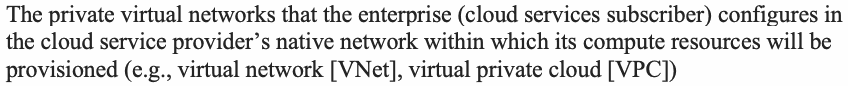
•企業（クラウドサービスの契約者）がクラウドサービス・プロバイダーのネイティブ・ネットワーク内に構成し、コンピューティング・リソースを配置するプライベート仮想ネットワーク（仮想ネットワーク［VNet］、仮想プライベートクラウド［VPC］など）
•Various local networks on enterprise premises (e.g., enterprise data centers, headquarters, and branch offices)
•企業構内の各種ローカルネットワーク（企業データセンター、本社、支社など）
•The portion of a wide area network that is used by the enterprise to connect its various geographically dispersed locations and cloud service access points
•地理的に分散した各拠点とクラウドサービスのアクセスポイントを接続するために企業が利用する広域ネットワークの一部
Introduction
序論
The enterprise network landscape has undergone a significant transformation in the last decade. The drivers for this transformation are (a) enterprise access to multiple cloud services, (b) the geographic spread of enterprise-owned (on-premises) IT resources (e.g., in headquarters, multiple branch offices, and data centers), and (c) changes to application architecture from being monolithic to a set of loosely coupled microservices – often with a dedicated infrastructure (called the service mesh) that provides all application services, including security. The high-level impacts of these drivers on the security of the current enterprise network landscape are (a) the disappearance of the concept of a perimeter associated with the enterprise network; (b) an increase in attack surface due to the sheer multiplicity of IT resource components associated with computing, storage, and network appliances; and (c) the escalation of attacks across several network boundaries leveraging connectivity features. Before providing guidance for secure operations in this new network landscape, this document will consider the structural and security implications of the drivers to enhance understanding of its components and data flows.
過去10年間で、企業ネットワーク環境は大きく変容した。この変容の要因は、(a) 企業が複数のクラウドサービスにアクセスすること、(b) 企業所有のITリソース（オンプレミス）が地理的に分散したこと（本社、複数の支社、データセンターなど）、(c) アプリケーション・アーキテクチャがモノリシック型から疎結合のマイクロサービス群へ変化したことであり、後者は多くの場合、セキュリティを含むすべてのアプリケーションサービスを提供する専用基盤（サービスメッシュと呼ばれる）を伴う。これらの要因が現在の企業ネットワーク環境のセキュリティに与える大局的な影響は、(a) 企業ネットワークに関連する境界という概念の消失、(b) コンピューティング、ストレージ、ネットワーク機器に関連するITリソース構成要素の数が非常に多いことによる攻撃対象領域の拡大、(c) 接続機能を悪用した、複数のネットワーク境界をまたぐ攻撃の拡大である。この新しいネットワーク環境における安全な運用のためのガイダンスを示す前に、本書では、その構成要素とデータフローへの理解を深めるため、これらの要因がもたらす構造面とセキュリティ面の影響を検討する。
Structural Implications of Drivers on the Enterprise Network Landscape
要因が企業ネットワーク環境にもたらす構造的影響
In order to have a good structural view of the current enterprise network landscape, it is necessary to look at the current enterprise IT environment in general. The IT environment now consists of:
現在の企業ネットワーク環境の構造を適切に把握するには、現在の企業IT環境全般を見る必要がある。IT環境は現在、次の要素で構成される。
•Subscription to multiple cloud services, such as Infrastructure as a Service (IaaS) for computing, Software as a Service (SaaS) for applications, Platform as a Service (PaaS) for an application development platform, and other cloud services (e.g., identity as a service [IDaaS] for authentication)
•複数のクラウドサービスの契約。たとえば、コンピューティング向けのサービスとしてのインフラストラクチャ（IaaS）、アプリケーション向けのサービスとしてのソフトウェア（SaaS）、アプリケーション開発基盤向けのサービスとしてのプラットフォーム（PaaS）、およびその他のクラウドサービス（認証向けのサービスとしてのアイデンティティ［IDaaS］など）
•Enterprise IT applications (on-premises) that are located at corporate headquarters and geographically distributed branch offices and data centers
•本社、地理的に分散した支社、データセンターに設置された企業ITアプリケーション（オンプレミス）
•IT applications that range from being monolithic to being made up of loosely coupled microservices, each hosted on heterogeneous platforms
•モノリシック型から、異種プラットフォーム上で個別にホストされる疎結合マイクロサービス群まで、さまざまな形態のITアプリケーション
•Presence of edge computing devices, including the Internet of Things (IoT), in some environments
•一部の環境における、モノのインターネット（IoT）を含むエッジコンピューティング機器の存在
The above scenarios call for widespread connectivity between IT systems that now defines the current enterprise network landscape. Connectivity, in turn, involves:
上記の状況はITシステム間の広範な接続を必要とし、その接続が現在の企業ネットワーク環境を特徴づけている。そして接続には、次のものが含まれる。
•Connectivity between IT resources (e.g., servers for computing and storage) in data centers (network fabric)
•データセンター内のITリソース（コンピューティング・サーバーやストレージ・サーバーなど）間の接続（ネットワーク・ファブリック）
•Connectivity between IT resources within a corporate office or branch office (e.g., Wireless Fidelity (Wi-Fi), Local Area Network - LAN, and Virtual Local Area Network - VLAN)
•企業オフィスまたは支社内のITリソース間の接続（Wireless Fidelity（Wi-Fi）、ローカルエリアネットワーク（LAN）、仮想ローカルエリアネットワーク（VLAN）など）
•Connectivity for users to remotely access IT resources from home, travel locations, branch offices, and corporate offices using wide area networks (WANs), which use multiple networks such as the internet, Multiprotocol Label Switching (MPLS), and – in some instances – cellular networks (e.g., 4G/LTE, 5G).
•広域ネットワーク（WAN）を使って、ユーザーが自宅、出張先、支社、企業オフィスからITリソースにリモートアクセスするための接続。WANは、インターネット、マルチプロトコル・ラベル・スイッチング（MPLS）、および場合によっては携帯電話網（4G/LTE、5Gなど）といった複数のネットワークを利用する。
•Connectivity to cloud services provided by a cloud service provider (CSP) through a virtual private network (VPN) or subscription to WAN services (premises-based equipment licenses or cloud-based)
•仮想プライベートネットワーク（VPN）またはWANサービス（拠点設置型機器のライセンスもしくはクラウドベース）の契約を通じた、クラウドサービス・プロバイダー（CSP）が提供するクラウドサービスへの接続
Security Implications of Drivers on the Enterprise Network Landscape
要因が企業ネットワーク環境にもたらすセキュリティ上の影響
Now consider the immediate security implications of these drivers on the enterprise network landscape. Subscription to multiple cloud services: Accessing cloud services from multiple cloud providers has become the norm for many enterprises. This trend is motivated not only by the need to avoid a cloud-vendor locked-in situation but also by different CSPs offering different value-added functions for different services (e.g., IaaS, SaaS). The consequence of this trend is that – from an enterprise point of view – the following networks have become extensions of the enterprise network and, thus, come under the scope of enterprise network management with attendant responsibilities for ensuring that security protections become a critical function.
次に、これらの変化要因が企業ネットワーク環境にもたらす直接的なセキュリティ上の影響を考える。複数のクラウドサービスの契約：複数のクラウド・プロバイダーのクラウドサービスへのアクセスは、多くの企業で一般的になっている。この傾向は、クラウド・ベンダーへのロックイン状態を避ける必要だけでなく、CSPごとにサービス（IaaS、SaaSなど）に応じて異なる付加価値機能を提供していることにも起因する。この傾向の結果、企業の観点からは次のネットワークが企業ネットワークの延長となり、したがって企業ネットワーク管理の対象範囲に含まれ、それに伴ってセキュリティ保護を確保する責任が重要な機能となる。
•Network used for accessing the cloud services (e.g., VPNs or subscribed WANs)
•クラウドサービスへのアクセスに使うネットワーク（VPNまたは契約したWANなど）
•Intercloud network (since communication between one CSP and another may be inevitable)
•クラウド間ネットワーク（あるCSPと別のCSPとの間の通信が避けられない場合があるため）
•The network inside the cloud provider that needs to be navigated to access the subscribed services (e.g., VPC, VNET).
•契約したサービスへアクセスする際に通過する必要がある、クラウド・プロバイダー内のネットワーク（VPC、VNETなど）
Geographic spread of IT resources and users: IT resources are now widely distributed not only due to the geographic spread of enterprise premises (e.g., headquarters and branch offices) but also for reliability and disaster recovery (DR) considerations. Additionally, the applications hosted in those resources are now accessed by users from various enterprise premises (through the enterprise network) as well as from home and public locations (e.g., hotels and cafes) through multiple devices, such as desktops, laptops, and mobile phones. Ensuring secure access from these varied locations and devices becomes the responsibility of the enterprise. Changes in application architecture: Application architectures – especially those of cloud-native applications – have changed from being monolithic to being microservices-based in order to meet the deployment agility and modular scalability requirements. This, combined with DevSecOps (a paradigm covering Development, Security and Operations) primitives such as continuous integration/continuous deployment (CI/CD) pipelines for the development and deployment of software, has improved the security profile of the applications but has also introduced new threat vectors related to the CI/CD workflows themselves.
ITリソースとユーザーの地理的な分散：ITリソースは現在、企業拠点（本社、支社など）の地理的な分散だけでなく、信頼性や災害復旧（DR）の観点からも広く分散している。さらに、これらのリソース上でホストされるアプリケーションには現在、ユーザーがさまざまな企業拠点から（企業ネットワーク経由で）アクセスするほか、自宅や公共の場所（ホテル、カフェなど）からも、デスクトップ、ノートパソコン、携帯電話などの複数のデバイスを通じてアクセスする。こうした多様な場所やデバイスからの安全なアクセスを確保することは、企業の責任となる。アプリケーション・アーキテクチャの変化：アプリケーション・アーキテクチャ、特にクラウドネイティブ・アプリケーションのアーキテクチャは、デプロイの俊敏性とモジュール単位の拡張性の要件を満たすため、モノリシック型からマイクロサービス型へ変化した。このことは、ソフトウェアの開発とデプロイのための継続的インテグレーション／継続的デプロイメント（CI/CD）パイプラインなどのDevSecOps（開発、セキュリティ、運用を包含するパラダイム）の基本要素と相まって、アプリケーションのセキュリティ態勢を改善したが、CI/CDワークフロー自体に関連する新たな脅威経路も生じさせた。
The Need for a Security Guide
セキュリティガイドの必要性
Based on the security implications discussed in the previous subsection, there is a new security scenario in the current enterprise network landscape that needs to be addressed through security guidance. Some of the salient aspects of this scenario are:
前項で述べたセキュリティ上の影響を踏まえると、現在の企業ネットワーク環境には、セキュリティ・ガイダンスを通じて対処する必要がある新たなセキュリティ状況がある。この状況の顕著な側面のいくつかは次のとおりである。
•Ubiquitous access locations, ubiquitous hosting locations of the application components, and multiple WAN transport protocols have caused shifts in security focuses, goals, and principles.
•どこからでもアクセスでき、アプリケーション構成要素のホスティング場所も多様化し、WANの伝送プロトコルも複数あることで、セキュリティの重点、目標、原則が変化した。
•The security focus has enlarged from being network-centric (i.e., internal/corporate network versus external/public internet) to centering on the user, device, endpoint, and service.
•セキュリティの重点がネットワーク中心（内部／企業ネットワークと外部／公開インターネットの区別）から、ユーザー、デバイス、エンドポイント、サービスを中心とするものへ拡大した。
•The new trust relationship has to not only be based on identity or the location of the access but enhanced to include validation of each access request (not just at the beginning of an access session), as well as the applicable set of contextual information associated with the user, device, or service.
•新たな信頼関係は、IDやアクセス場所だけに基づくのではなく、（アクセス・セッションの開始時だけでなく）各アクセス要求の検証、さらにユーザー、デバイス、またはサービスに関連する該当する一連のコンテキスト情報も含むよう強化する必要がある。
Scope
適用範囲
The scope of this document includes:
本書の適用範囲には次が含まれる。
•A structural view of the enterprise network landscape based on the distribution of IT resources and the consequent security challenges it poses
•ITリソースの分散状況と、それがもたらすセキュリティ課題に基づく企業ネットワーク環境の構造的な概観
•Emerging and state-of-practice solutions in terms of feature sets and requirements to address the security challenges; solutions discussed will focus on the functional and operational levels
•セキュリティ課題に対処するための、新興のソリューションおよび現在の実務水準にあるソリューション（機能群と要件の観点から）。取り上げるソリューションは、機能レベルと運用レベルに焦点を当てる。
Target Audience
対象読者
This guidance is intended for network design architects and network security solution architects in organizations with a hybrid IT environment (consisting of both on-premises and cloud-based applications) with a combination of legacy and microservices-based (i.e., cloud-native) applications.
本ガイダンスは、レガシー・アプリケーションとマイクロサービス型（すなわちクラウドネイティブ）アプリケーションが混在するハイブリッドIT環境（オンプレミスとクラウドベースの両方のアプリケーションで構成される）を持つ組織の、ネットワーク設計アーキテクトおよびネットワーク・セキュリティ・ソリューション・アーキテクトを対象とする。
Organization of This Document
本書の構成
The organization of this document is as follows:
本書の構成は次のとおりである。
•Section 2 considers traditional network access principles, technologies, and limitations in the context of the current enterprise network landscape.
•第2節では、現在の企業ネットワーク環境を踏まえ、従来のネットワーク・アクセスの原則、技術、限界を検討する。
•Section 3 provides a brief functional description of network security appliances – some new, some traditional (e.g., firewall) – that have enhanced capabilities to meet the security needs of the current network landscape.
•第3節では、現在のネットワーク環境のセキュリティ要件を満たすよう機能が強化されたネットワーク・セキュリティ機器（新しいものもあれば、ファイアウォールなどの従来型のものもある）の機能を簡潔に説明する。
•Section 4 outlines various network configurations that have evolved specifically for realizing security functions (e.g., device authentication).
•第4節では、セキュリティ機能（デバイス認証など）の実現に特化して発展してきた各種ネットワーク構成を概説する。
•Section 5 considers a framework (i.e., ZTNA) that integrates two or more of these stand-alone network configurations to realize an abstract enterprise architecture (zero trust architecture [ZTA]) and looks at two candidate enterprise network security techniques – microsegmentation and software-defined perimeter (SDP).
•第5節では、これらの単独のネットワーク構成を2つ以上統合して抽象的な企業アーキテクチャ（ゼロトラスト・アーキテクチャ［ZTA］）を実現するフレームワーク（すなわちZTNA）を検討し、企業ネットワーク・セキュリティ技術の2つの候補であるマイクロセグメンテーションとソフトウェア定義境界（SDP）を取り上げる。
•Section 6 focuses on the evolution of the WAN portion of the enterprise network landscape and enhanced offerings of the WAN services with global spread with a built-in security service infrastructure.
•第6節では、企業ネットワーク環境のWAN部分の進化と、セキュリティサービス基盤を組み込み世界規模で展開されるWANサービスの強化された提供内容に焦点を当てる。
•Section 7 provides the summary and conclusions.
•第7節では、要約と結論を示す。
Traditional Enterprise Network Access Approaches and Their Limitations
従来の企業ネットワーク・アクセス方式とその限界
Section 1 outlined the structural and security implications of the drivers for the current enterprise network landscape, which have impacted the mechanics of secure access to applications through the network. This section analyzes the security limitations of traditional network access approaches.
第1節では、現在の企業ネットワーク環境を形作る変化要因がもたらす構造面とセキュリティ面の影響を概説した。これらの影響は、ネットワークを介してアプリケーションへ安全にアクセスする仕組みに及んでいる。本節では、従来のネットワーク・アクセス方式のセキュリティ上の限界を分析する。
•Limitation of network perimeter-based protections
•ネットワーク境界型防御の限界
•Limitations of VPN-based access
•VPNベースのアクセスの限界
•Limitations of MPLS technology as enterprise WANs
•企業WANとしてのMPLS技術の限界
•Limitations of authentication infrastructure
•認証基盤の限界
Limitations of Network Perimeter-based Protections
ネットワーク境界型防御の限界
Early solutions for secure enterprise network access were geared toward environments with well-defined network perimeters. All enterprise IT resources were endpoints of enterprise LANs (usually defined as a floor in a large enterprise, building, or small campus), and multiple LANs connected together inside a defined building or campus constituted the internal corporate network. Entry points into this corporate network were protected using devices called firewalls. In this environment, all devices and users within firewalled LANs were totally trusted and, hence, considered safe for accessing application resources. However, the following factors have annulled the concept of that perimeter and greatly expanded the attack surface:
安全な企業ネットワーク・アクセスのための初期のソリューションは、明確に定義されたネットワーク境界を持つ環境に向けたものであった。企業のすべてのITリソースは企業LAN（通常、大規模企業のフロア、建物、または小規模なキャンパスとして定義される）のエンドポイントであり、特定の建物またはキャンパス内で相互接続された複数のLANが内部の企業ネットワークを構成していた。この企業ネットワークへの入口は、ファイアウォールと呼ばれる機器を用いて保護されていた。この環境では、ファイアウォールで保護されたLAN内のすべてのデバイスとユーザーは完全に信頼され、したがってアプリケーション・リソースへアクセスしても安全であると見なされていた。しかし、次の要因がその境界という概念を無効にし、攻撃対象領域を大幅に拡大させた。
•Distributed nature of the application into ones located within a corporate data center, remote branch offices, and multiple cloud locations
•企業データセンター、遠隔支社、複数のクラウド上にアプリケーションが分散していること
•Perimeter approach based on the premise that the threat originates outside of the network, which is why most perimeter security solutions (e.g., intrusion prevention system - IPS, intrusion detection systems - IDS, firewalls) focus only on north-south traffic (i.e., ingress, which refers to traffic that originates from outside of the local network and destined for endpoints in the local cluster network). However, over 75 % of network traffic is now east-west (i.e., within the local network) or server-to-server (due to applications being based on microservices), which is largely invisible to security teams, though some visibility is now sought through endpoint detection and response (EDR) solutions that collect security telemetry data on endpoints. Any threat that is already inside of a network can move laterally and remain undetected for days or even months.
原本PDFの抜粋画像
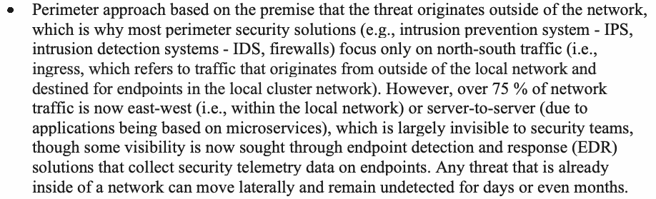
•境界型のアプローチは、脅威がネットワークの外部から発生するという前提に基づいている。そのため、ほとんどの境界セキュリティ・ソリューション（侵入防止システム（IPS）、侵入検知システム（IDS）、ファイアウォールなど）は南北トラフィック（すなわちイングレス。ローカルネットワークの外部から発生し、ローカルクラスターネットワーク内のエンドポイントを宛先とするトラフィックを指す）のみに焦点を当てている。しかし、ネットワーク・トラフィックの75 %超は現在、東西トラフィック（すなわちローカルネットワーク内）またはサーバー間トラフィック（アプリケーションがマイクロサービスに基づいているため）であり、これらはセキュリティチームからほとんど見えない。もっとも、エンドポイント上のセキュリティ・テレメトリ・データを収集するエンドポイント検知・対応（EDR）ソリューションを通じて、ある程度の可視性を得ようとする動きが現在ある。すでにネットワーク内部にいる脅威は、ラテラルムーブメントを行い、数日間、さらには数か月間も検知されないままでいることがある。
•Edge computing [1], where much of the computing takes place close to the location of multiple IoT devices that may be geographically dispersed
•エッジコンピューティング[1]。地理的に分散している場合がある複数のIoTデバイスの所在地の近くで、コンピューティング処理の多くが行われる
•Users located both within and outside of the corporate network, such as in homes, remote branch offices, and public locations (e.g., hotels, pubs); some enterprises must also provide access to ecosystem partners, who may be on their own corporate networks
•企業ネットワークの内部と外部の両方にいるユーザー（自宅、遠隔支社、公共の場所（ホテル、パブなど）にいるユーザーなど）。企業によっては、エコシステム・パートナーにもアクセスを提供しなければならず、それらのパートナーは自社の企業ネットワーク上にいる場合がある
Limitations of VPN-based Access
VPNベースのアクセスの限界
The increase in teleworking employees due to the pandemic has necessitated a means for secure access to IT resources inside an enterprise network in the form of VPNs. A VPN allows organizations to extend perimeter-based security across a public network. Security is enabled by setting up a secure tunnel in the public network using protocols such as Internet Protocol Security (IPSEC) and Transport Layer Security (TLS). However, there are some limitations and security risks associated with VPNs.
パンデミックによるテレワーク従業員の増加により、企業ネットワーク内のITリソースへ安全にアクセスする手段が、VPNという形で必要になった。VPNを使うと、組織は境界型セキュリティを公開ネットワーク越しに拡張できる。セキュリティは、インターネット・プロトコル・セキュリティ（IPSEC）やトランスポート層セキュリティ（TLS）などのプロトコルを用いて公開ネットワーク内に安全なトンネルを構築することで実現される。しかし、VPNにはいくつかの限界とセキュリティリスクがある。
•An increasing trend involves the movement of corporate resources to the cloud and the use of mobile devices. The VPN connections that remote users establish terminate at the VPN concentrators located at the edge of the corporate network. Hence, even traffic generated during those users’ cloud service access lands at the corporate internet edge and has to be validated and routed back to the internet to access the cloud resources. This phenomenon is called “hair-pinning”, results in extra distance, increases network latency, and has the potential to cause traffic bottlenecks.
•企業リソースのクラウドへの移行とモバイルデバイスの使用が増加傾向にある。リモートユーザーが確立するVPN接続は、企業ネットワークのエッジに配置されたVPN集約装置で終端する。そのため、これらのユーザーがクラウドサービスへアクセスする際に生成されるトラフィックも企業のインターネット・エッジに到達し、クラウド・リソースへアクセスするために、検証されたうえでインターネットへルーティングし直されなければならない。この現象は「ヘアピニング」と呼ばれ、経路が余分に長くなり、ネットワーク遅延を増加させ、トラフィックのボトルネックを引き起こす可能性がある。
•Periodic disclosure of vulnerabilities. Two recent examples are “session hijacking” and “account ID extraction” [2].
•脆弱性の定期的な公表。最近の2つの例は「セッションハイジャック」と「アカウントIDの抽出」である[2]。
•When VPNs are deployed as hardware appliances, it puts a limit on the number of users who can connect through the network gateway and limits scalability.
•VPNをハードウェア機器として導入すると、ネットワーク・ゲートウェイ経由で接続できるユーザー数に上限が生じ、拡張性が制限される。
•VPNs often require agents, which makes providing access in scenarios with a high volume of third-party users (contractors and partners) difficult [53].
•VPNではエージェントが必要になることが多く、そのため、第三者ユーザー（請負業者やパートナー）が多数存在する状況ではアクセスの提供が難しくなる[53]。
2.3 Limitation of MPLS Technology as Enterprise WANs
2.3 企業WANとしてのMPLS技術の限界
Multi-protocol label switching (MPLS) technology is used for enterprise WANs, but the wide geographic span of an enterprise network with multiple data centers and cloud services has imposed some limitations on its use (in addition to cost).
マルチプロトコル・ラベル・スイッチング（MPLS）技術は企業WANに使用されているが、複数のデータセンターやクラウドサービスを含む企業ネットワークの地理的な広がりの大きさにより、（費用面に加えて）その利用にいくつかの制約が生じている。
•The geographic span of enterprise IT resources and subsequent networking connections have made traversal through the internet inevitable for many portions of the enterprise’s access network. Since MPLS is a different network, it provides access to the internet only through designated and limited access points (similar to the hair pinning phenomenon). This increases latency for time-sensitive corporate applications.
•企業ITリソースの地理的な広がりと、それに伴うネットワーク接続により、企業のアクセス・ネットワークの多くの部分でインターネットを経由することが避けられなくなっている。MPLSは別個のネットワークであるため、指定された限られたアクセスポイントを通じてしかインターネットへのアクセスを提供しない（ヘアピニング現象に類似する）。このため、時間に敏感な企業アプリケーションの遅延が増加する。
•Given the different networking technology, the appliances and subsequent configuration procedures are different, making network management a complex task.
•ネットワーク技術が異なるため、機器とそれに伴う構成手順も異なり、ネットワーク管理が複雑な作業になる。
2.4 Limitation of Authentication Infrastructure
2.4 認証基盤の限界
In the current network landscape, which consists of access to on-premises and cloud-based applications, there exist authentication infrastructures (both enterprise and cloud-based) to authenticate end users using various token-based approaches (e.g., Jason Web Tokens [JWT] or Security Assertion Markup Language (SAML) 2.0 tokens). This infrastructure by itself is not sufficient to meet the authentication needs of the environment that contains microservices-based applications, which are becoming ubiquitous in both enterprise and cloud environments. This class of application consists of loosely coupled microservices that require the generation of multiple interservice requests to complete a business process or transaction. This scenario, in turn, needs an infrastructure for also authenticating services (in addition to users) with special requirements as follows:
オンプレミスおよびクラウドベースのアプリケーションへのアクセスで構成される現在のネットワーク環境には、さまざまなトークンベースの方式（例：JSON Web Token［JWT］やSecurity Assertion Markup Language（SAML）2.0トークン）を用いてエンドユーザーを認証するための認証基盤（企業内およびクラウドベースの両方）が存在する。この基盤だけでは、企業環境とクラウド環境の双方で広く普及しつつあるマイクロサービスベースのアプリケーションを含む環境の認証ニーズを満たすのに十分ではない。この種のアプリケーションは疎結合のマイクロサービスで構成され、業務プロセスやトランザクションを完了するために複数のサービス間要求の生成を必要とする。このシナリオでは、（ユーザーに加えて）サービスも認証するための基盤が必要となり、それには次のような特別な要件がある。
•A portable and interoperable cryptographic identity is required for workloads or services, as well as a standardized way to retrieve, validate, and interact with those identities. An example of such a specification is Secure Production Identity Framework for Everyone (SPIFFE) [47].
原本PDFの抜粋画像
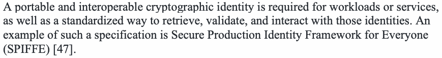
•ワークロードやサービスには、移植性と相互運用性を備えた暗号学的アイデンティティと、それらのアイデンティティを取得、検証、および利用するための標準化された方法が必要である。そのような仕様の例として、Secure Production Identity Framework for Everyone（SPIFFE）[47]がある。
•The location of the service may change due to the virtualized nature of the application hosting environment (e.g., migration to different Virtual Machines (VMs), migration to a different pod in containerized applications). Hence, the identity should abstract the environment hosting the service.
•アプリケーションのホスティング環境は仮想化されているという性質上、サービスの場所が変わることがある（例：別の仮想マシン（VM）への移行、コンテナ化されたアプリケーションにおける別のポッドへの移行）。したがって、アイデンティティは、サービスをホストする環境を抽象化するものであるべきである。
•The validation of identity (authentication) and authorization need to be done continuously (and not just at the beginning of a service request) as the risk profile associated with the request may change if there are multiple entities involved or if there are changes in behavioral patterns that need to be included as a validation parameter and monitored.
•アイデンティティの検証（認証）と認可は、サービス要求の開始時だけでなく継続的に行う必要がある。関係するエンティティが複数ある場合や、検証パラメーターとして含めて監視する必要のある行動パターンに変化がある場合、要求に関連するリスクプロファイルが変化することがあるためである。
Network Security Appliances in the Enterprise Network Landscape
企業ネットワーク環境におけるネットワーク・セキュリティ機器
This section considers some new network security appliances and enhanced features in established appliances for meeting the security needs of the current network landscape. These can simply be viewed as point security solutions, but evaluating their functions and features will provide an understanding of the effectiveness of network configurations and technologies that form part of the integrated solutions that will be discussed in Sections 4 and 5, respectively.
本節では、現在のネットワーク環境のセキュリティニーズを満たすための、いくつかの新しいネットワーク・セキュリティ機器と、既存の機器における強化された機能を検討する。これらは単にポイント型のセキュリティ・ソリューションと見なすこともできるが、その機能と特徴を評価することで、それぞれ第4節と第5節で論じる統合ソリューションの一部を成すネットワーク構成と技術の有効性を理解できる。
Cloud Access Security Broker (CASB)
クラウドアクセス・セキュリティ・ブローカー（CASB）
Given the increasing subscription to multiple clouds in many enterprises, one of the most important pieces of software is the cloud access security broker (CASB). It sits on the network between the cloud service customers (CSC) and the cloud service providers (CSP). The evolution of CASB functionality can be traced as follows [3]:
多くの企業で複数のクラウドへの加入が増えていることを踏まえると、最も重要なソフトウェアの一つがクラウドアクセス・セキュリティ・ブローカー（CASB）である。CASBは、クラウドサービス顧客（CSC）とクラウドサービス・プロバイダー（CSP）の間のネットワーク上に位置する。CASBの機能の進化は次のようにたどることができる[3]。
•The primary function of the first generation of CASBs was the discovery of resources. They provided visibility into all of the cloud resources that the enterprise users accessed, thus preventing or minimizing the chances of shadow IT. Shadow IT is the practice of some users using cloud applications that are not authorized by the enterprise IT management from home or the office using enterprise desktops. An example of this is the use of unapproved software as-a-service (SaaS) applications for file sharing, social media, collaboration, and web conferencing [4]. This generation of CASBs also provides some statistics, such as software-as-a-service (SaaS) utilization.
•第1世代のCASBの主な機能は、リソースの発見であった。企業ユーザーがアクセスしたすべてのクラウド・リソースを可視化し、それによってシャドーITが発生する可能性を防止または最小化した。シャドーITとは、一部のユーザーが、企業のIT管理部門に許可されていないクラウド・アプリケーションを、自宅やオフィスから企業のデスクトップを使って利用する行為である。その例として、ファイル共有、ソーシャルメディア、コラボレーション、ウェブ会議のために未承認のSoftware as a Service（SaaS）アプリケーションを使用することが挙げられる[4]。この世代のCASBは、Software as a Service（SaaS）の利用状況などの統計情報も提供する。
•The current generation of CASBs enforces security and governance policies for cloud applications, thus enabling enterprises to extend their on-premises policies to the cloud. Specific security services provided by CASBs include:
•現行世代のCASBは、クラウド・アプリケーションに対してセキュリティおよびガバナンスのポリシーを施行し、それによって企業がオンプレミスのポリシーをクラウドに拡張できるようにする。CASBが提供する具体的なセキュリティサービスには、次のものがある。
•Protection of enterprise data that live in cloud service providers’ servers (due to SaaS or IaaS subscriptions), as well as data inflow and data outflow (i.e., Data Loss Prevention [DLP] capabilities) from those servers.
•（SaaSまたはIaaSの契約により）クラウドサービス・プロバイダーのサーバーに置かれる企業データ、ならびにそれらのサーバーに対するデータの流入および流出の保護（すなわち、データ損失防止［DLP］機能）。
•Tracking of threats, such as account hijacking and other malicious activities, some of which can detect anomalies in users’ cloud access behavior (through robust User and Entity Behavior Analytics (UEBA) functionality) and stop insider threats and advanced cyberattacks [5].
•アカウント乗っ取りやその他の悪意ある活動などの脅威の追跡。その一部は、（堅牢なユーザーおよびエンティティ行動分析（UEBA）機能を通じて）ユーザーのクラウドアクセス行動における異常を検知し、内部脅威や高度なサイバー攻撃を阻止できる[5]。
•Detection of misconfigurations in the enterprise’s subscribed IaaS and cloud servers. These misconfigurations pose serious security risks, such as data breaches. Alerts generated by CASB due to misconfigurations in the enterprise’s IaaS deployments direct the enterprise to follow guidelines, such as the Center for Internet Security’s (CIS) benchmarks for public cloud services, thus improving the overall security profile of the enterprise for cloud access [4].
•企業が契約しているIaaSおよびクラウドサーバーにおける設定ミスの検知。こうした設定ミスは、データ侵害などの深刻なセキュリティリスクをもたらす。企業のIaaS導入環境における設定ミスに起因してCASBが生成するアラートは、パブリッククラウドサービス向けのCenter for Internet Security（CIS）ベンチマークなどのガイドラインに従うよう企業に促し、それによってクラウドアクセスに関する企業の全体的なセキュリティプロファイルを改善する[4]。
Enhanced Firewall Capabilities
ファイアウォール機能の強化
The security functions in firewalls have enlarged alongside the changing network landscape. Firewalls started as hardware appliances that prevented network packets from a device with a particular network location (e.g., combination of Internet Protocol (IP) address and port) in one subnet (e.g., external network or internet) from accessing a device on another network location or subnet (e.g., intranet or Demilitarized Zone (DMZ) or corporate network). In that setup, it primarily secured a network perimeter. The evolution of firewall functions can be traced based on the following feature sets [6]:
ファイアウォールのセキュリティ機能は、ネットワーク環境の変化とともに拡大してきた。ファイアウォールは当初、あるサブネット（例：外部ネットワークやインターネット）内の特定のネットワーク位置（例：インターネット・プロトコル（IP）アドレスとポートの組み合わせ）にあるデバイスからのネットワークパケットが、別のネットワーク位置またはサブネット（例：イントラネット、非武装地帯（DMZ）、企業ネットワーク）上のデバイスにアクセスするのを防ぐハードウェア機器として始まった。この構成では、主にネットワーク境界を保護していた。ファイアウォール機能の進化は、次の機能群に基づいてたどることができる[6]。
•Packet filters and network address translation: Packet filtering and Network address translation (NAT) are used to monitor and control packets moving across a network interface, apply predetermined security rules, and obscure the internal network from the public internet.
•パケットフィルターとネットワークアドレス変換：パケットフィルタリングとネットワークアドレス変換（NAT）は、ネットワーク・インターフェースを通過するパケットを監視および制御し、あらかじめ定められたセキュリティ規則を適用し、内部ネットワークを公衆インターネットから見えにくくするために使用される。
•Stateful inspection: Stateful firewalling, also known as dynamic packet filtering, monitors the state of connections and makes determinations as to what types of data packets belong to a known active connection and can be allowed to pass through the firewall.
•ステートフル・インスペクション：動的パケットフィルタリングとも呼ばれるステートフル・ファイアウォールは、接続の状態を監視し、どの種類のデータパケットが既知のアクティブな接続に属し、ファイアウォールの通過を許可できるかを判断する。
•Deep packet inspection (DPI): This feature, also known as packet sniffing, examines the content of packets (both the header and the payload, unlike the stateful inspection that inspects only the packet header). In addition to the capability provided by stateful inspection, this has capabilities related to finding hidden threats within the data stream, such as attempts at data exfiltration, violations of content policies, malware, and more.
原本PDFの抜粋画像
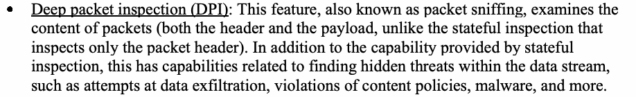
•ディープ・パケット・インスペクション（DPI）：パケット・スニッフィングとも呼ばれるこの機能は、パケットの内容を検査する（パケット・ヘッダーのみを検査するステートフル・インスペクションとは異なり、ヘッダーとペイロードの両方を検査する）。ステートフル・インスペクションが提供する能力に加えて、データ持ち出しの試み、コンテンツ・ポリシー違反、マルウェアなど、データストリーム内に隠れた脅威の発見に関する能力を備える。
•Threat detection and response: Modern firewalls can gather and analyze enough data across multiple packets and sessions to detect threats and security incidents targeted at a particular system or a family of systems. These data from multiple firewalls can also be directed toward security information and event management (SIEM) and correlated with data from other security tools and IT systems to detect enterprise-wide attacks that span multiple systems and network layers. In addition, these data can be used to understand evolving threats and define new access rules, attack patterns, and defensive strategies [6].
•脅威の検知と対応：最新のファイアウォールは、複数のパケットやセッションにわたって十分なデータを収集および分析し、特定のシステムまたはシステム群を標的とする脅威やセキュリティ・インシデントを検知できる。複数のファイアウォールから得られるこれらのデータは、セキュリティ情報およびイベント管理（SIEM）に送り、他のセキュリティツールやITシステムのデータと相関させて、複数のシステムやネットワーク層にまたがる企業全体に及ぶ攻撃を検知することもできる。さらに、これらのデータは、進化する脅威を理解し、新しいアクセス規則、攻撃パターン、および防御戦略を定義するために使用できる[6]。
•Logging and auditing capabilities: Logging and auditing capabilities result in the construction of network events that can be used to identify patterns of performance and security issues.
•ロギングおよび監査機能：ロギングおよび監査機能により、性能上およびセキュリティ上の問題のパターンを特定するために利用できるネットワークイベントが構築される。
•Access control functions: Access control functions enforce granular sophisticated access control policies.
•アクセス制御機能：アクセス制御機能は、きめ細かく高度なアクセス制御ポリシーを施行する。
•Multiple locations and functions: Firewalls reside at different locations to perform different functions. Firewalls at the network edge perform the network perimeter protection function by filtering disallowed sources and destinations and blocking the packets of potential threats. Firewalls inside a data center can segment the internal network to prevent the lateral movement of traffic and isolate sensitive resources (e.g., services and data stores). Device-based firewalls prevent malicious traffic in and out of endpoints.
•複数の設置場所と機能：ファイアウォールは異なる場所に配置され、異なる機能を果たす。ネットワークエッジのファイアウォールは、許可されていない送信元と宛先をフィルタリングし、潜在的な脅威のパケットを遮断することで、ネットワーク境界保護機能を果たす。データセンター内部のファイアウォールは、内部ネットワークをセグメント化してトラフィックのラテラルムーブメントを防ぎ、機微なリソース（例：サービスやデータストア）を隔離できる。デバイスベースのファイアウォールは、エンドポイントに出入りする悪意あるトラフィックを防ぐ。
•Open Application Programming Interfaces (APIs): These enable integration with many networking products that provide additional security capabilities.
•オープンなアプリケーション・プログラミング・インターフェース（API）：これらは、追加のセキュリティ機能を提供する多くのネットワーク製品との統合を可能にする。
•Policy Composition Capabilities: Some firewalls can have the capabilities to merge policies at enforcement time so as to ensure that consistent policies are applied to different classes of users (e.g., those on-premises and on private and public clouds).
•ポリシー合成機能：一部のファイアウォールは、異なるクラスのユーザー（例：オンプレミスのユーザーや、プライベートクラウドおよびパブリッククラウド上のユーザー）に一貫したポリシーが適用されることを確実にするため、施行時にポリシーをマージする機能を備えることができる。
•Web application firewalls (WAF): This class of firewalls has been used ever since web applications accessed through web protocols, such as Hypertext Transfer Protocol (HTTP), came into existence. A feature advancement in this class of firewalls is advanced Uniform Resource Locator (URL) filtering. This is the ability to detect traffic from malicious URLs and prevent web-based threats and attacks by receiving real-time data analyzed by machine learning algorithms [7][8]. Specifically, this class of firewalls can inspect threat vectors for SQL Injection, operating system (OS) command injections, and cross-site scripting attacks, as well as prevent inbound attacks. They are used in content delivery networks (CDN) and to prevent distributed denial-of-service (DDoS) attacks. Some additional features found in this class of firewalls are:
原本PDFの抜粋画像
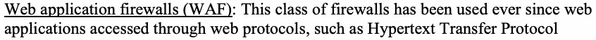
•ウェブ・アプリケーション・ファイアウォール（WAF）：この種類のファイアウォールは、ハイパーテキスト転送プロトコル（HTTP）などのウェブ・プロトコルを通じてアクセスされるウェブ・アプリケーションが登場して以来、使用されてきた。この種類のファイアウォールにおける機能面の進歩の一つが、高度なユニフォーム・リソース・ロケーター（URL）フィルタリングである。これは、機械学習アルゴリズムによって分析されたリアルタイム・データを受け取ることで、悪意あるURLからのトラフィックを検知し、ウェブベースの脅威や攻撃を防ぐ能力である[7][8]。具体的には、この種類のファイアウォールは、SQLインジェクション、オペレーティングシステム（OS）コマンド・インジェクション、およびクロスサイト・スクリプティング攻撃の脅威ベクトルを検査できるほか、インバウンド攻撃を防止できる。コンテンツ配信ネットワーク（CDN）で使用され、また分散型サービス拒否（DDoS）攻撃を防ぐためにも使用される。この種類のファイアウォールに見られる追加の機能には、次のものがある。
•Ability to specify an allowable list of services (control at the application level)
•許可するサービスの一覧を指定する能力（アプリケーションレベルでの制御）
•Traffic matches the intent of allowed ports
•トラフィックが許可されたポートの意図に合致すること
•Filtering of some unwanted protocols
•一部の不要なプロトコルのフィルタリング
Appliance-set with Integrated Functions
統合機能を備えた機器群
•Unified threat management (or UTMs): UTM devices combine many of the most critical security functions – firewall, IPS, VPN concentrator, gateway antivirus, content filtering, and WAN load balancing – into a single device, usually with a unified management console.
•統合脅威管理（UTM）：UTM機器は、最も重要なセキュリティ機能の多く、すなわちファイアウォール、IPS、VPNコンセントレーター、ゲートウェイ・アンチウイルス、コンテンツ・フィルタリング、およびWAN負荷分散を単一の機器に統合したものであり、通常は統合管理コンソールを備える。
•Next-generation firewall (NGFW): The distinguishing feature of NGFW is application data awareness. It can look at data not only at layers 3 and 4 of an Open Systems Interconnection (OSI) stack but also at layer 7 – the application level. Its capabilities extend beyond packet filtering and stateful inspection. There are multiple deployment options available for NGFWs, such as an appliance in the data center, as a software running in a VM in a cloud, or as a cloud service (FWaaS). Some capabilities of NGFW include [9]:
•次世代ファイアウォール（NGFW）：NGFWを特徴づける機能は、アプリケーション・データの認識である。開放型システム間相互接続（OSI）スタックの第3層と第4層だけでなく、第7層、すなわちアプリケーションレベルのデータも見ることができる。その能力は、パケットフィルタリングやステートフル・インスペクションを超えて広がっている。NGFWには、データセンター内の機器、クラウド内のVM上で動作するソフトウェア、あるいはクラウドサービス（FWaaS）など、複数の導入オプションがある。NGFWの機能の一部を次に示す[9]。
a. Deep Packet Inspection (DPI) b. TLS decryption and inspection of packet payload c. Intrusion prevention system (IPS) feature
a. ディープ・パケット・インスペクション（DPI） b. TLSの復号とパケット・ペイロードの検査 c. 侵入防止システム（IPS）機能
•Web application and API protection (WAAP): This is a comprehensive security approach and an enhancement over WAF. WAF is an integral component for API security, BOT (abbreviation for Robot) defense, and DDOS protection.
•ウェブ・アプリケーションおよびAPI保護（WAAP）：これは包括的なセキュリティ・アプローチであり、WAFを強化したものである。WAFは、APIセキュリティ、ボット（BOT、Robotの略）防御、およびDDoS防御に不可欠な構成要素である。
•These can be offered as a product suite or as a cloud-based service [10][11].
•これらは、製品スイートとして、またはクラウドベースのサービスとして提供され得る[10][11]。
•Secure web gateway (SWGs): SWGs are appliances utilized for policy-based access to and control of cloud-based applications as well as governance of access to the open web for enterprise users in ubiquitous locations (e.g., headquarters, branch offices, home, remote locations). An SWG is fundamentally a web filter that protects outbound user traffic through HTTP or Hypertext Transfer Protocol Secure (HTTPS) inspection [12]. It also protects user endpoints from web-based threats that can occur when users click on links to malicious websites or to websites infected with malware. They centralize control, visibility, and reporting across many locations and types of users. They are not a replacement for WAFs, which protect websites housed in enterprise data centers and large headquarter sites from inbound attacks.
原本PDFの抜粋画像
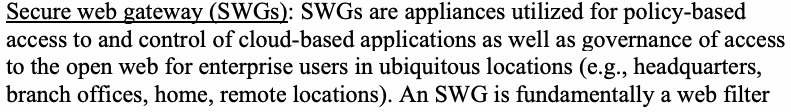
•セキュア・ウェブ・ゲートウェイ（SWG）：SWGは、あらゆる場所（例：本社、支社、自宅、遠隔地）にいる企業ユーザーについて、クラウドベースのアプリケーションへのポリシーに基づくアクセスとその制御、およびオープンなウェブへのアクセスの統制に用いられるアプライアンスである。SWGは基本的にはウェブ・フィルターであり、HTTPまたはHypertext Transfer Protocol Secure（HTTPS）の検査を通じて、ユーザーの外向きトラフィックを保護する[12]。また、悪意のあるウェブサイトやマルウェアに感染したウェブサイトへのリンクをユーザーがクリックした際に生じ得るウェブベースの脅威から、ユーザーのエンドポイントを保護する。SWGは、多数の拠点およびさまざまな種類のユーザーにわたる制御、可視性、報告を一元化する。SWGはWAFの代替ではない。WAFは、企業のデータセンターや大規模な本社拠点に置かれたウェブサイトを内向きの（インバウンド）攻撃から保護するものである。
Network Security Automation Tools
ネットワーク・セキュリティ自動化ツール
Network security automation tools automate the life cycle processes involved in deployment, observability/monitoring, threat intelligence gathering/reporting (e.g., generating alerts of security violations for security personnel to take timely action), and – in some instances – automatic remediation. These automated tools are an indispensable part of the current enterprise network landscape, especially those that consist of highly distributed on-premises and cloud-based IT resources. The security capabilities of network tools fall under the category of policy enforcement point (PEP) security capabilities that are extensively discussed in CISA’s TIC 3.0 Cloud Use Case [51]. Guidance for the deployment of these capabilities is also covered in that document. The intent of the material in this section is to highlight some higher-level metrics that this category of tools should satisfy in order to perform their intended functions effectively; it is not meant to be used as deployment guidance. Each higher- level metric is tagged with the abbreviation NSAT-HLM-x, where NSAT stands for network security automation tool, HLM stands for high-level metric, and x stands for the numerical sequence.
ネットワーク・セキュリティ自動化ツールは、導入、可観測性／監視、脅威インテリジェンスの収集／報告（例：セキュリティ担当者が適時に対応できるよう、セキュリティ違反の警告を生成する）、および場合によっては自動修復に関わるライフサイクル・プロセスを自動化する。こうした自動化ツールは、現在の企業ネットワーク環境、とりわけ高度に分散したオンプレミスおよびクラウドベースのITリソースで構成される環境に不可欠な要素である。ネットワーク・ツールのセキュリティ機能は、CISAのTIC 3.0クラウド・ユースケース[51]で詳しく論じられているポリシー実施ポイント（PEP）のセキュリティ機能の区分に該当する。これらの機能の導入に関するガイダンスも同文書で扱われている。本節の内容は、この種のツールが意図された機能を効果的に果たすために満たすべき、いくつかの高水準メトリクスを取り上げることを意図したものであり、導入ガイダンスとして用いることを意図したものではない。各高水準メトリクスにはNSAT-HLM-xという略号を付す。NSATはネットワーク・セキュリティ自動化ツール、HLMは高水準メトリクス、xは連番を表す。
•NSAT-HLM-1: The tools should scale to meet the volume, velocity, and variety of today’s application development, deployment, and maintenance paradigms [13]. This requirement is critical in environments where DevSecOps is used to deploy not only applications but also infrastructures, the latter using infrastructure-as-code (IaC) tools. These tools are an integral part of the smart automated workflows called CI/CD pipelines, which invoke them to deploy servers (computing), networking, and storage infrastructure. Hence, this class of network automation tools should have the capability to be seamlessly integrated into the corresponding CI/CD pipelines.
•NSAT-HLM-1：ツールは、今日のアプリケーション開発、導入、保守の方式における量、速度、多様性に対応できるよう拡張できるべきである[13]。この要件は、DevSecOpsを用いてアプリケーションだけでなくインフラストラクチャも導入する環境において極めて重要であり、後者の導入にはInfrastructure as Code（IaC）ツールが用いられる。これらのツールは、CI/CDパイプラインと呼ばれるスマートな自動化ワークフローの不可欠な構成要素であり、CI/CDパイプラインはこれらのツールを呼び出して、サーバー（コンピューティング）、ネットワーク、ストレージの各インフラストラクチャを導入する。したがって、この種のネットワーク自動化ツールは、対応するCI/CDパイプラインにシームレスに統合できる能力を備えるべきである。
•NSAT-HLM-2: The tools should have the capability to minimize human intervention for security remediation, which is slow and prone to error. In other words, the more automated remediation features built into the tool, the better.
•NSAT-HLM-2：ツールは、セキュリティ修復のための人手による介入（時間がかかり、誤りが生じやすい）を最小限に抑える能力を備えるべきである。言い換えれば、ツールに組み込まれた自動修復機能が多いほどよい。
•NSAT-HLM-3 (enhanced threat intelligence and protection): The tools should have advanced threat intelligence, real-time threat prevention capabilities for known and zero-day vulnerabilities, and sandboxing features for isolating malicious traffic.
•NSAT-HLM-3（脅威インテリジェンスと保護の強化）：ツールは、高度な脅威インテリジェンス、既知の脆弱性およびゼロデイ脆弱性に対するリアルタイムの脅威防止機能、ならびに悪意のあるトラフィックを隔離するためのサンドボックス機能を備えるべきである。
•NSAT-HLM-4 (leveraging knowledge of previous events): The tools should have features for matching current events to past ones and for leveraging the remediation measures performed for those instances in the current solution. This brings about reduction to the average outage time [14].
•NSAT-HLM-4（過去の事象に関する知見の活用）：ツールは、現在の事象を過去の事象と照合し、それらの事例で実施された修復措置を現在の解決策に活用するための機能を備えるべきである。これにより、平均停止時間が短縮される[14]。
The network monitoring and observability tools and network provisioning tools are important classes of network security automation tools. The requirements and feature set for these two classes alone are discussed in the following subsections.
ネットワーク監視・可観測性ツールとネットワーク・プロビジョニング・ツールは、ネットワーク・セキュリティ自動化ツールの重要な分類である。以下の各項では、この2つの分類についてのみ、その要件と機能群を説明する。
3.4.1. Network Monitoring and Observability Tools
3.4.1 ネットワーク監視・可観測性ツール
This class of tools gathers these data for obtaining visibility into the entire network. These data are then used to generate a dashboard that presents the topography of the enterprise network by showing all connections and presenting key operating parameters (e.g., latency, network traffic-level). Some of these data generated by this class of tool and their uses are:
この種のツールは、ネットワーク全体の可視性を得るために、これらのデータを収集する。これらのデータは、すべての接続を示し、主要な運用パラメーター（例：遅延、ネットワーク・トラフィック量）を提示することによって企業ネットワークのトポグラフィーを表すダッシュボードの生成に用いられる。この種のツールが生成するデータの一部とその用途は、次のとおりである。
•Identification of interfaces: Monitoring tools identify the interfaces (called tracepoints) for defining the parameters for network resource provisioning and help the IaC generate the relevant code for invoking those interfaces.
•インターフェースの特定：監視ツールは、ネットワーク・リソースのプロビジョニングのパラメーターを定義するためのインターフェース（トレースポイントと呼ばれる）を特定し、IaCがそれらのインターフェースを呼び出すための関連コードを生成するのを助ける。
•Measurement of drift: Despite using IaC to deploy the network infrastructure, unauthorized or ad hoc changes in network configuration can alter the performance and security parameters for application execution (called the drift). Monitoring tools should have the ability to monitor these drift parameters (e.g., bandwidth availability, unwanted traffic) and alert for corrective action.
•ドリフトの測定：IaCを用いてネットワーク・インフラストラクチャを導入していても、ネットワーク構成に対する無許可の変更や場当たり的な変更によって、アプリケーション実行のための性能およびセキュリティのパラメーターが変化することがある（これをドリフトと呼ぶ）。監視ツールは、こうしたドリフト・パラメーター（例：利用可能な帯域幅、不要なトラフィック）を監視し、是正措置のために警告を発する能力を備えるべきである。
•Secure overlay designs for cloud service access: Monitoring tools can generate data to enable centralized network management tools to perform security functions, such as building a virtual network segmentation on top of the native network segmentation features offered by CSP, provided that suitable APIs are available.
•クラウドサービス・アクセスのためのセキュアなオーバーレイ設計：監視ツールは、適切なAPIが利用可能であることを条件に、集中型ネットワーク管理ツールがセキュリティ機能（CSPが提供するネイティブのネットワーク・セグメンテーション機能の上に仮想ネットワーク・セグメンテーションを構築するなど）を実行できるようにするデータを生成できる。
•Support for incidence response processes: Sophisticated network monitoring tools generate network security alerts and threat intelligence feeds. Handling these alerts and feeds is part of the incidence response (IR) process in an enterprise and is carried out by members of a security operations center (SOC). A security strategy that has evolved in recent years to automate the IR process is called security orchestration, automation, and response (SOAR). Some of the state of practice applications of SOAR include threat detection and response, vulnerability prioritization, compliance checks, and security audits with potential applications in many emerging areas, such as IoT management [15].
•インシデント対応プロセスの支援：高度なネットワーク監視ツールは、ネットワーク・セキュリティ警告や脅威インテリジェンス・フィードを生成する。これらの警告やフィードへの対処は、企業におけるインシデント対応（IR）プロセスの一部であり、セキュリティ運用センター（SOC）の要員によって実施される。IRプロセスを自動化するために近年発展してきたセキュリティ戦略は、セキュリティのオーケストレーション・自動化・対応（SOAR）と呼ばれる。SOARの実務水準にある用途の一部として、脅威の検知と対応、脆弱性の優先順位付け、コンプライアンス・チェック、セキュリティ監査があり、IoT管理など多くの新興分野にも応用の可能性がある[15]。
3.4.2. Automated Network Provisioning Tools
3.4.2 自動ネットワーク・プロビジョニング・ツール
As already stated, automated network resource provisioning is enabled by infrastructure-as-code (IaC) tools. The code that describes the networking infrastructure (in addition to the computing and storage infrastructure) is stored in a code repository. The initial deployment of the networking infrastructure and subsequent upgrade is automated by defining a workflow that invokes the IaC (e.g., GitOps workflow) as part of a CI/CD pipeline definition [16]. The advantages of this approach for managing the enterprise networking infrastructure for multi-cloud deployment are:
前述のとおり、ネットワーク・リソースの自動プロビジョニングは、Infrastructure as Code（IaC）ツールによって可能になる。ネットワーク・インフラストラクチャ（コンピューティングおよびストレージのインフラストラクチャに加えて）を記述するコードは、コード・リポジトリに保存される。ネットワーク・インフラストラクチャの初期導入とその後のアップグレードは、IaCを呼び出すワークフロー（例：GitOpsワークフロー）をCI/CDパイプライン定義の一部として定義することで自動化される[16]。マルチクラウド導入における企業ネットワーク・インフラストラクチャの管理にこのアプローチを用いる利点は、次のとおりである。
•It enables the enterprise to have tight version control (tracking changes) so that unauthorized networking devices and changes in associated configurations do not open up security vulnerabilities.
•企業が厳密なバージョン管理（変更の追跡）を行えるようになり、無許可のネットワーク機器や関連する構成の変更によってセキュリティ脆弱性が生じることがなくなる。
•It enables the enterprise to have a uniform infrastructure across all environments – development, testing, staging, and production.
•企業が、開発、試験、ステージング、本番というすべての環境にわたって均一なインフラストラクチャを持てるようになる。
•Monitoring the drift (the unintended changes) between the defined infrastructure (as found in IaC) and the operational infrastructure (as measured by monitoring tools described in Section 3.4.1) and taking corrective action to address the drift help to maintain the necessary security posture for the enterprise networking environment.
•定義されたインフラストラクチャ（IaCに記述されたもの）と運用中のインフラストラクチャ（第3.4.1節で述べた監視ツールによって測定されたもの）との間のドリフト（意図しない変更）を監視し、そのドリフトに対処するための是正措置を講じることは、企業ネットワーク環境に必要なセキュリティ態勢の維持に役立つ。
•The DevSecOps paradigm consisting of CI/CD pipelines invokes the network provisioning tool (IaC code generator) to automate the initial deployment and subsequent reconfiguration of the networking infrastructure. Since the pipelines have a built-in audit process, the changes in network configuration are automatically captured in the audit, which enables the enterprise to demonstrate corporate security policy compliance and regulatory policy compliance for their networks where applicable.
•CI/CDパイプラインで構成されるDevSecOpsパラダイムは、ネットワーク・プロビジョニング・ツール（IaCコード生成ツール）を呼び出して、ネットワーク・インフラストラクチャの初期導入とその後の再構成を自動化する。パイプラインには監査プロセスが組み込まれているため、ネットワーク構成の変更は自動的に監査に取り込まれる。これにより、企業は、該当する場合に、自社のネットワークについて企業のセキュリティ・ポリシーへの準拠および規制上のポリシーへの準拠を実証できる。
•Testing the code (IaC code) generated by IaC tools (and invoked by the CI/CD pipeline code that deploys the infrastructure using IaC in the DevSecOps process) ensures that security policies are consistently and uniformly applied across the entire enterprise networking infrastructure (i.e., multiple cloud services).
•IaCツールが生成するコード（IaCコード。DevSecOpsプロセスにおいてIaCを用いてインフラストラクチャを導入するCI/CDパイプライン・コードによって呼び出される）を試験することで、セキュリティ・ポリシーが企業ネットワーク・インフラストラクチャ全体（すなわち、複数のクラウドサービス）にわたって一貫して均一に適用されることが確実になる。
•The advantage of having plug-ins for defining network provisioning for different public cloud provider environments is that they can be used to customize the observability tools used for network monitoring for each of those cloud services that the enterprise has subscribed to [17].
•異なるパブリッククラウド・プロバイダー環境向けにネットワーク・プロビジョニングを定義するためのプラグインを持つことの利点は、企業が契約しているクラウドサービスのそれぞれについて、ネットワーク監視に用いる可観測性ツールをカスタマイズするためにそれらを利用できる点にある[17]。
Networking Appliances as Services
サービスとしてのネットワーク機器
Another trend in the enterprise network landscape is that a portion of network infrastructure can be obtained from third-party providers as a leased service called a network as a service (NaaS). This service is offered using technologies such as enterprise 5G and edge computing. The advantages of NaaS are:
企業ネットワーク環境におけるもう一つの傾向は、ネットワーク・インフラストラクチャの一部を、ネットワーク・アズ・ア・サービス（NaaS）と呼ばれるリース型サービスとして第三者プロバイダーから調達できることである。このサービスは、企業向け5Gやエッジコンピューティングなどの技術を用いて提供される。NaaSの利点は次のとおりである。
•Just like subscriptions to SaaS and IaaS, it reduces capex costs for the enterprise.
•SaaSやIaaSのサブスクリプションと同様に、企業の設備投資（capex）コストを削減する。
•It is flexible and scalable since it is software-defined and virtualized.
•ソフトウェア定義で仮想化されているため、柔軟で拡張性がある。
•As a consequence of the previous advantage, quality of service (QoS) requirements of diverse applications can be met by creating customized traffic flow for each application type [18].
•前項の利点の結果として、アプリケーションの種類ごとにカスタマイズされたトラフィック・フローを作成することで、多様なアプリケーションのサービス品質（QoS）要件を満たすことができる[18]。
•New applications that require an increased network footprint can be quickly introduced to the enterprise, thus facilitating agile business diversification.
•より大きなネットワーク・フットプリントを必要とする新しいアプリケーションを企業に迅速に導入でき、それによって俊敏な事業多角化が促進される。
However, they are limited point security solutions rather than comprehensive solutions that address all aspects of enterprise security.
ただし、これらは企業セキュリティのあらゆる側面に対処する包括的なソリューションではなく、限定的なポイント型セキュリティ・ソリューションである。
Network Configurations for Basic Security Functions
基本的なセキュリティ機能のためのネットワーク構成
Any enterprise-wide secure network that consists of on-premises and cloud-hosted applications should be based on an established security framework. In turn, security frameworks consist of many basic security functions. The purpose of this section is to describe the network configurations or designs (and network communication exchanges based on them) that have emerged as the state of practice for implementing these security functions. The state of practice network configuration features (NCF) found in enterprises with hybrid application environments can be classified under the following areas [19]:
オンプレミスのアプリケーションとクラウドでホストされるアプリケーションから成る企業全体のセキュアなネットワークは、いずれも確立されたセキュリティ・フレームワークに基づくべきである。そして、セキュリティ・フレームワークは多数の基本的なセキュリティ機能で構成される。本節の目的は、これらのセキュリティ機能を実装するための実務水準として定着してきたネットワーク構成または設計（およびそれらに基づくネットワーク通信のやり取り）を説明することである。ハイブリッド・アプリケーション環境を持つ企業に見られる実務水準のネットワーク構成機能（NCF）は、次の分野に分類できる[19]。
•Network configuration for Device Management
•デバイス管理のためのネットワーク構成
•Network configuration for User Authentication
•ユーザー認証のためのネットワーク構成
•Network configuration for Device Authentication and Health Monitoring
•デバイス認証と健全性監視のためのネットワーク構成
•Network configuration for Authorizing Application/Service Access
•アプリケーション／サービス・アクセス認可のためのネットワーク構成
•Network configurations for Preventing Attack Escalation
•攻撃の拡大防止のためのネットワーク構成
Each of the network configuration features is enumerated using the identifier of the form HAE-NCF-x, where HAE denotes a hybrid application environment, NCF denotes the network configuration feature, and x stands for the sequence number of the feature. First, consider the conceptual underpinning – critical information that is used as part of the deployment of a security functionality using a network configuration.
各ネットワーク構成機能は、HAE-NCF-xという形式の識別子を用いて列挙する。HAEはハイブリッド・アプリケーション環境、NCFはネットワーク構成機能、xは機能の連番を表す。まず、概念的基盤、すなわちネットワーク構成を用いたセキュリティ機能の導入の一環として用いられる重要な情報について考える。
4.1 Conceptual Underpinning – Contextual Information
4.1 概念的基盤 — コンテキスト情報
Section 2.4 discussed the limitation of using user identity alone to authorize application requests. However, this does not mean that identity verification can be relegated to a secondary requirement. It has been widely recognized that identity validation is the entry point (may be a highly-vulnerable point of entry into the system) to an application request [26] since all requests – whether coming from a service (or microservice), user, or device – come with a claimed identity. This identity must be verified using robust, phishing-resistant multi-factor authentication. However, other attributes associated with the user and the information associated with other entities involved in an application access request, such as devices and services, are required in current enterprise IT environments and are collectively called contextual information. This contextual information set may vary from one enterprise to another and is based on the level of trust that the organization requires for a particular access request. Since the role of contextual information in potential attacks may not be known, the set to be included in the access decision is a risk-based decision. Contextual information may broadly belong to the following five key areas [27]:
第2.4節では、アプリケーション要求の認可にユーザーIDのみを用いることの限界を論じた。しかし、これはID検証を二次的な要件に格下げしてよいということを意味しない。サービス（またはマイクロサービス）、ユーザー、デバイスのいずれから来るものであれ、すべての要求は主張されたIDを伴うため、IDの妥当性確認がアプリケーション要求の入口（システムへの極めて脆弱な侵入口となり得る）であることは広く認識されている[26]。このIDは、堅牢でフィッシング耐性のある多要素認証を用いて検証しなければならない。しかし、現在の企業IT環境では、ユーザーに関連するその他の属性や、アプリケーション・アクセス要求に関与するデバイスやサービスなどの他のエンティティに関連する情報も必要とされており、これらは総称してコンテキスト情報と呼ばれる。このコンテキスト情報の集合は企業によって異なり得るものであり、特定のアクセス要求に対して組織が求める信頼のレベルに基づく。潜在的な攻撃においてコンテキスト情報が果たす役割は分からない場合があるため、アクセス判断に含める集合はリスクに基づいて決定される。コンテキスト情報は、大きく次の5つの主要分野に属し得る[27]。
1.Information about the user requesting access – Apart from user identity, attributes associated with the user, such as their role in the organization, current assignments, and status (cross verification of identity in the enterprise identity management (IDM) system vs enterprise directory)
1.アクセスを要求するユーザーに関する情報 — ユーザーのアイデンティティに加え、組織内での役割、現在の担当業務、ステータスなど、ユーザーに関連付けられた属性（企業のID管理（IDM）システムと企業ディレクトリとの間でのアイデンティティの相互照合）
2.Information about the device from which access is being requested – Establishing trust in the device through a combination of health and risk profiles of the device. For example, the risk profile of the device can be obtained through an out-of-the-box posture check (risk of the device [28]) with or without integrating with an endpoint protection tool for the device. Other crucial information (provided by telemetry data) needed to assess the security status of the endpoint devices [29] include (a) device support label (the device is managed or corporate-owned) and (b) device posture information (whether it has been compromised). All of these factors go into a policy evaluation for determining the level of trust and must be channeled into authentication and monitoring decisions [30].
2.アクセス要求元のデバイスに関する情報 — デバイスの健全性プロファイルとリスク・プロファイルを組み合わせて、デバイスに対する信頼を確立する。たとえば、デバイスのリスク・プロファイルは、標準搭載のポスチャ・チェック（デバイスのリスク[28]）によって、当該デバイス用のエンドポイント保護ツールと統合するか否かにかかわらず取得できる。エンドポイント・デバイスのセキュリティ状態を評価するために必要な（テレメトリ・データによって提供される）その他の重要な情報[29]には、(a) デバイス・サポート・ラベル（デバイスが管理対象である、または企業所有である）および (b) デバイスのポスチャ情報（侵害されているかどうか）が含まれる。これらの要素はすべて、信頼のレベルを決定するためのポリシー評価に用いられ、認証および監視の判断に反映されなければならない[30]。
3.Information about real-time contextual data – Date, time, and geolocation at which the access request occurs
3.リアルタイムのコンテキスト・データに関する情報 — アクセス要求が発生した日付、時刻、地理的位置
4.Information about IT services (e.g., app, data) being accessed
4.アクセス対象となるITサービス（アプリケーションやデータなど）に関する情報
5.Information about the security of the environment hosting the IT services being accessed
5.アクセス対象のITサービスをホストする環境のセキュリティに関する情報
The requirements for contextual information [27]:
コンテキスト情報の要件[27]：
•Should include not only that which is collected by the native platform (the platform on which the application is hosted) but also that which can be obtained from third-party platforms and can provide more detailed information
•ネイティブ・プラットフォーム（アプリケーションがホストされているプラットフォーム）によって収集される情報だけでなく、第三者プラットフォームから取得でき、より詳細な情報を提供できるものも含めるべきである。
•Should be available in real time so that user experience with access is not affected
•アクセス時のユーザー体験に影響を与えないよう、リアルタイムで利用可能であるべきである。
•Should be prioritized based on the value each provides
•それぞれがもたらす価値に基づいて優先順位付けされるべきである。
•Should be consistent with the level of risk associated with each access request
•各アクセス要求に伴うリスクのレベルと整合しているべきである。
No application and/or data access in the modern enterprise network context can be deemed secure by ignoring relevant contextual information when the access scenario involves allowing a user, device, or service from any network channel (e.g., corporate network, home network, public network, or branch office) to access a resource located anywhere (on-premises or cloud).
現代の企業ネットワークの文脈では、アクセス・シナリオが、任意のネットワーク経路（例：企業ネットワーク、自宅ネットワーク、公衆ネットワーク、支社）からのユーザー、デバイス、またはサービスに対し、任意の場所（オンプレミスまたはクラウド）にあるリソースへのアクセスを許可することを伴う場合、関連するコンテキスト情報を無視したのでは、いかなるアプリケーションおよび／またはデータへのアクセスも安全と見なすことはできない。
4.2 Network Configuration for Device Management
4.2 デバイス管理のためのネットワーク構成
With the disappearance of the network perimeter (Section 2.1) and the distribution of the application targets (being a hybrid application environment), enterprises should adopt an “endpoint is the perimeter” paradigm and have a device management system in place. HAE-NCF-1: There should be a unified endpoint management (UEM) [48] solution in place to manage and secure all endpoints that will access on-premises and cloud-based applications. The minimal managed tasks and capabilities of UEM should include: a. Ability to support endpoint devices with different operating systems b. Installation and maintenance of device and service authentication certificates c. Installation and maintenance of device health applications d. Updates of patches on the devices e. Enables admins to track, audit, and report endpoints for content and applications
ネットワーク境界の消失（第2.1節）と、アクセス先となるアプリケーションの分散（ハイブリッド・アプリケーション環境であること）に伴い、企業は「エンドポイントが境界である」というパラダイムを採用し、デバイス管理システムを整備すべきである。HAE-NCF-1：オンプレミスおよびクラウド上のアプリケーションにアクセスするすべてのエンドポイントを管理し保護するために、統合エンドポイント管理（UEM）[48]ソリューションを整備すべきである。UEMが最低限備えるべき管理タスクおよび能力には、次のものを含めるべきである。a. 異なるオペレーティングシステムを搭載したエンドポイント・デバイスをサポートする能力 b. デバイス認証証明書およびサービス認証証明書のインストールと保守 c. デバイス健全性アプリケーションのインストールと保守 d. デバイス上のパッチの更新 e. 管理者が、コンテンツおよびアプリケーションについてエンドポイントを追跡、監査、報告できるようにすること
4.3 Network Configuration for User Authentication
4.3 ユーザー認証のためのネットワーク構成
HAE-NCF-2: Consistent with OMB memorandum M-22-09 [49], which outlines the federal zero trust architecture strategy:
HAE-NCF-2：連邦政府のゼロトラスト・アーキテクチャ戦略の概要を示すOMB覚書M-22-09[49]に沿って、次のとおりとする。
•The network should be configured to route all user access requests to all applications (on-premises and cloud-based, such as SaaS), to an enterprise managed IdP.
•ネットワークは、すべてのアプリケーション（オンプレミスのもの、およびSaaSなどクラウド上のもの）に対するすべてのユーザー・アクセス要求を、企業が管理するIdPへルーティングするよう構成すべきである。
•A minimum of two authenticator factors must be used to authenticate users. The multi-factor authentication (MFA) process employed should use phishing-resistant authenticators. Also termed as “verifier impersonation-resistant”, these authenticators should meet the requirements at level AAL3 in NIST guidance SP 800-63-3 [50].
•ユーザーの認証には、最低2つの認証要素を使用しなければならない。採用する多要素認証（MFA）プロセスでは、フィッシング耐性のある認証器を使用すべきである。「検証者なりすまし耐性」とも呼ばれるこれらの認証器は、NISTのガイダンスSP 800-63-3[50]のAAL3レベルの要件を満たすべきである。
4.4 Network Configuration for Device Authentication and Health Monitoring
4.4 デバイス認証と健全性監視のためのネットワーク構成
HAE-NCF-3: Device authentication can be performed through certificate validation using appropriate protocols. A device health check may involve both its security posture (e.g., the version of an operating system it is running, the patches that have been applied, the security software that is installed) and environmental information, such as geolocation.
HAE-NCF-3：デバイス認証は、適切なプロトコルを用いた証明書検証によって実施できる。デバイスの健全性チェックには、そのセキュリティ態勢（例：実行しているオペレーティングシステムのバージョン、適用済みのパッチ、インストールされているセキュリティ・ソフトウェア）と、地理的位置などの環境情報の両方が含まれることがある。
4.5 Network Configuration for Authorizing Application/Service Access
4.5 アプリケーション／サービス・アクセス認可のためのネットワーク構成
HAE-NCF-4: Standardized protocols, such as OAuth 2.0 [20], should be used to issue access tokens to the validated user, device, or service to enable access to cloud-based applications. HAE-NCF-5: Network configuration for microservices-based applications (on-premises or in cloud) should include capabilities such as service discovery, encryption, service authentication, load balancing, observability (visibility of network traffic at layers 3-7), and canary rollouts. Further, visibility into microservices runtime behavior (and the ability to provide more dynamic security controls) can be enabled by attaching eBPF programs [52] to tracepoint events (the entry to or exit from any function in kernel or user space).
HAE-NCF-4：検証済みのユーザー、デバイス、またはサービスにアクセス・トークンを発行してクラウド上のアプリケーションへのアクセスを可能にするために、OAuth 2.0[20]などの標準化されたプロトコルを使用すべきである。HAE-NCF-5：（オンプレミスまたはクラウド上の）マイクロサービス型アプリケーション向けのネットワーク構成には、サービス検出、暗号化、サービス認証、負荷分散、可観測性（第3層から第7層におけるネットワーク・トラフィックの可視性）、カナリア・ロールアウトなどの機能を含めるべきである。さらに、eBPFプログラム[52]をトレースポイント・イベント（カーネル空間またはユーザー空間における任意の関数への入口または出口）にアタッチすることで、マイクロサービスの実行時の挙動の可視化（およびより動的なセキュリティ制御を提供する能力）を実現できる。
4.6 Network Configurations for Preventing Attack Escalation
4.6 攻撃の拡大防止のためのネットワーク構成
The network configurations for attack escalation prevention are techniques used to realize ZTNA and are discussed in the next section. Two established configurations are:
原本PDFの抜粋画像
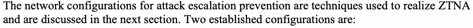
攻撃の拡大を防止するためのネットワーク構成は、ZTNAを実現するために用いられる技法であり、次節で説明する。確立された構成は次の2つである。
1.Microsegmentation
1.マイクロセグメンテーション
2.Software-defined perimeter (SDP)
2.ソフトウェア定義境界（SDP）
Enterprise-Wide Network Security Framework – Zero Trust Network Access (ZTNA)
企業全体のネットワーク・セキュリティ・フレームワーク — ゼロトラスト・ネットワーク・アクセス（ZTNA）
Each of the network configurations described in the previous section is for specific security functions (e.g., user authentication, device authentication). In many enterprise environments, these network configurations are not isolated implementations but rather an integral part of an enterprise-wide network that is governed by a security framework or strategy. A predominant strategy that has been endorsed by both government and industry for hybrid enterprises is zero trust (ZT). The blueprint for achieving the goals of ZT is the zero trust architecture (ZTA), and the consequent paradigm for network communication flows is Zero Trust Network Access (ZTNA). Working with many stakeholders, NIST has defined zero trust and zero trust principles as follows [33]:
前節で説明した各ネットワーク構成は、特定のセキュリティ機能（例：ユーザー認証、デバイス認証）のためのものである。多くの企業環境では、これらのネットワーク構成は孤立した実装ではなく、セキュリティ・フレームワークまたは戦略によって統制される企業全体のネットワークの不可欠な一部である。ハイブリッド企業向けに政府と産業界の双方から支持されている主要な戦略が、ゼロトラスト（ZT）である。ZTの目標を達成するための設計図がゼロトラスト・アーキテクチャ（ZTA）であり、それに伴うネットワーク通信フローのパラダイムがゼロトラスト・ネットワーク・アクセス（ZTNA）である。NISTは多くの関係者と協力して、ゼロトラストおよびゼロトラストの原則を次のように定義している[33]。
•Zero trust (ZT) is the term for an evolving set of cybersecurity paradigms that move defenses from static, network-based perimeters to focus on users, assets, and resources. It is a set of security primitives rather than a particular set of technologies. Zero trust assumes that there is no implicit trust granted to assets or user accounts based solely on their physical or network location (i.e., local area networks versus the internet) or on asset ownership (e.g., enterprise or personally owned). Zero trust focuses on protecting resources (e.g., assets, services, workflows, network accounts) rather than network segments, as the network location is no longer seen as the prime component to the security posture of the resource.
•ゼロトラスト（ZT）とは、防御を静的なネットワーク・ベースの境界から、ユーザー、資産、リソースに焦点を当てるものへと移行させる、進化しつつある一連のサイバーセキュリティ・パラダイムを指す用語である。これは特定の技術群ではなく、一連のセキュリティ・プリミティブである。ゼロトラストは、物理的な位置もしくはネットワーク上の位置（すなわち、ローカルエリアネットワークかインターネットか）のみ、または資産の所有形態（例：企業所有か個人所有か）のみに基づいて、資産やユーザー・アカウントに暗黙の信頼が付与されることはないと想定する。ゼロトラストは、ネットワーク・セグメントではなくリソース（例：資産、サービス、ワークフロー、ネットワーク・アカウント）の保護に焦点を当てる。ネットワーク上の位置は、もはやリソースのセキュリティ態勢の主要な構成要素とは見なされないためである。
•A zero trust architecture (ZTA) uses zero trust principles to plan industrial and enterprise infrastructure and workflows.
•ゼロトラスト・アーキテクチャ（ZTA）は、ゼロトラストの原則を用いて、産業および企業のインフラストラクチャとワークフローを計画する。
NIST’s guidance on zero trust also contains an abstract definition of zero trust architecture (ZTA) and gives general deployment models and use cases where zero trust could improve an enterprise’s overall information technology security posture. From the NIST vision of ZTA and state of practice implementations [34], the following have emerged as the three building blocks of ZTA:
NISTのゼロトラストに関するガイダンスには、ゼロトラスト・アーキテクチャ（ZTA）の抽象的な定義も含まれており、ゼロトラストによって企業の情報技術セキュリティ態勢全体を改善し得る一般的な導入モデルとユースケースが示されている。NISTによるZTAのビジョンと実務の現状における実装[34]から、次のものがZTAの3つの構成要素として浮かび上がっている。
1.Client or Browser: The point of entry for all users to access any resources hosted in multi-cloud and on-premises environments.
1.クライアントまたはブラウザー：マルチクラウド環境およびオンプレミス環境でホストされるあらゆるリソースに、すべてのユーザーがアクセスするための入口である。
2.The Controller: The policy decision point (PDP), which evaluates access requests based on the policies, conditions, and entitlements that grant access for all users, devices, and workloads from a single dashboard or via API.
2.コントローラー：ポリシー決定点（PDP）であり、すべてのユーザー、デバイス、ワークロードにアクセスを許可するポリシー、条件、エンタイトルメントに基づいて、単一のダッシュボードから、またはAPI経由でアクセス要求を評価する。
3.The Gateway: The policy enforcement point (PEP), a gateway that controls the flow of access to protected resources and dynamically builds micro-segmentation rules based on granted entitlements.
3.ゲートウェイ：ポリシー実施点（PEP）であり、保護対象リソースへのアクセスの流れを制御し、付与されたエンタイトルメントに基づいてマイクロセグメンテーション規則を動的に構築するゲートウェイである。
As already stated, the two established network configuration techniques for enabling ZTNA are microsegmentation and SDP, which are both discussed in the following subsections.
すでに述べたとおり、ZTNAを実現するための確立された2つのネットワーク構成技法はマイクロセグメンテーションとSDPであり、いずれも以下の各項で説明する。
5.1 Microsegmentation
5.1 マイクロセグメンテーション
Microsegmentation is a security design practice where an internal network (e.g., in the data center, cloud provider region) is divided into isolated segments so that the traffic in and out of each segment can be monitored and controlled [21]. The primary purpose of microsegmentation is to provide a degree of isolation to prevent attack escalation.
原本PDFの抜粋画像
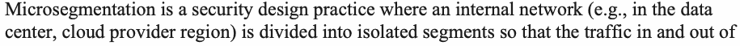
マイクロセグメンテーションとは、内部ネットワーク（例：データセンター内、クラウド・プロバイダーのリージョン内）を分離されたセグメントに分割し、各セグメントに出入りするトラフィックを監視および制御できるようにするセキュリティ設計手法である[21]。マイクロセグメンテーションの主な目的は、攻撃の拡大を防止するために一定の分離を提供することである。
Capabilities enabled by microsegmentation include:
マイクロセグメンテーションによって可能になる機能には、次のものがある。
•Segments being isolated and relatively small enables close monitoring of the traffic because of better visibility.
原本PDFの抜粋画像
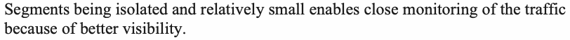
•セグメントが分離されており比較的小さいことで、可視性が向上し、トラフィックを綿密に監視できる。
•The consequence of the above capability is that granular access control is possible by defining associated policies.
原本PDFの抜粋画像
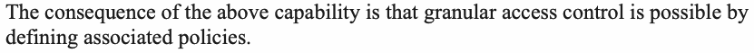
•上記の機能の帰結として、関連するポリシーを定義することで、きめ細かなアクセス制御が可能になる。
The above capabilities restrict the unauthorized lateral movement of a user or application that has either (a) breached the perimeter to enter the internal network or (b) been initiated by users within the internal network itself.
原本PDFの抜粋画像
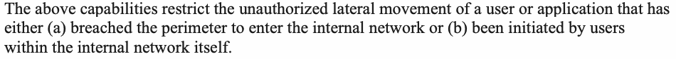
上記の機能は、(a) 境界を突破して内部ネットワークに侵入した、または (b) 内部ネットワーク内のユーザー自身によって開始された、ユーザーまたはアプリケーションによる不正なラテラルムーブメントを制限する。
5.1.1 Prerequisites for Implementing Microsegmentation
5.1.1 マイクロセグメンテーション実装の前提条件
•Creation of application identity: The fundamental requirement to enable this is the assignment of a unique identity to each application or service, just like how each user carries a unique identity (e.g., userid). Prior to the era of cloud-based applications, the application requests were validated based on the IP subnet or IP address from which they originated. Ubiquitous access and multi-clouds have eliminated the concept of network perimeters. Hence, authentication and authorization based on those parameters are neither feasible nor scalable. Further, the presence of proxies, network address translation, dynamic infrastructure (e.g., migration of applications between VMs), and load balancers make it impossible for the called application to know the IP address of the calling application in order to make authentication or authorization decisions. A unique application identity is inevitable.
•アプリケーションIDの作成：これを実現するための基本要件は、各ユーザーが一意のID（ユーザーIDなど）を持つのと同様に、各アプリケーションまたはサービスへ一意のIDを割り当てることである。クラウドベースのアプリケーションの時代より前は、アプリケーション要求を、その送信元のIPサブネットまたはIPアドレスに基づいて検証していた。ユビキタスなアクセスとマルチクラウドにより、ネットワーク境界という概念はなくなった。そのため、これらのパラメーターに基づく認証と認可は実現可能でもなく、拡張性もない。さらに、プロキシ、ネットワークアドレス変換、動的な基盤（アプリケーションのVM間移行など）、ロードバランサーが存在するため、呼び出されたアプリケーションが認証または認可の判断を行うために呼び出し元アプリケーションのIPアドレスを知ることは不可能である。一意なアプリケーションIDは不可欠である。
•Establishment of trust in application identity: The created application (workload or service) identity should not be subject to spoofing and should be continuously verifiable. An example of workload identity is a SPIFFE ID [47]. A SPIFFE ID is a string that uniquely and specifically identifies a workload and encoded as a Uniform Resource Identifier (URI), which takes the following format: spiffe://trust domain/workload identifier where the workload identifier uniquely identifies a specific workload within a trust domain. The SPIFFE ID is carried in a cryptographically-verifiable document called a SVID (SPIFFE Verifiable Identity Document). The two formats supported for SVID in SPIFFE specification are a short-lived X.509 certificate or a Java Web Token (JWT) token.
原本PDFの抜粋画像
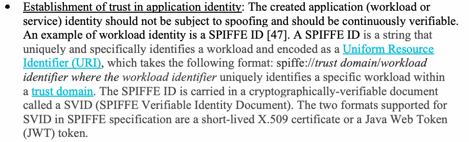
•アプリケーションIDへの信頼の確立：作成されたアプリケーション（ワークロードまたはサービス）のIDは、なりすましの対象とならず、継続的に検証可能であるべきである。ワークロードIDの例はSPIFFE ID[47]である。SPIFFE IDはワークロードを一意かつ具体的に識別する文字列で、統一リソース識別子（URI）として符号化され、次の形式をとる。spiffe://trust domain/workload identifier。ここでworkload identifierは、信頼ドメイン内の特定のワークロードを一意に識別する。SPIFFE IDは、SVID（SPIFFE Verifiable Identity Document）と呼ばれる暗号学的に検証可能な文書に格納されて運ばれる。SPIFFE仕様でSVIDとしてサポートされる2つの形式は、有効期間の短いX.509証明書またはJava Web Token（JWT）トークンである。
•Discovery of application resources: There should be a robust secure method for discovering all application resources (e.g., services, networks), called service discovery capability.
•アプリケーション・リソースの検出：サービス検出機能と呼ばれる、すべてのアプリケーション・リソース（サービス、ネットワークなど）を検出するための堅牢で安全な方法があるべきである。
•Segmentation of workloads: Security requirements for all applications and services must be identified and groupings established based on identical security requirements.
•ワークロードのセグメンテーション：すべてのアプリケーションとサービスのセキュリティ要件を特定し、同一のセキュリティ要件に基づいてグループを確立しなければならない。
•Mapping of logical application groupings to physical or virtual infrastructures: Application-centric groupings must be mapped to physical or virtual infrastructures that constitute the data center topology to facilitate actual applications and services deployment.
•論理的なアプリケーション・グループと物理または仮想基盤の対応付け：実際のアプリケーションやサービスの展開を容易にするため、アプリケーション中心のグループを、データセンター・トポロジーを構成する物理または仮想基盤に対応付けなければならない。
5.1.2 Microsegmentation – Implementation Approaches
5.1.2 マイクロセグメンテーションの実装方法
Before discussion of microsegmentation, a discussion of a traditional network segmentation – called a segment-based approach – is in order to point out its limitations and difficulties. In this approach, the applications and service resources with similar security requirements are grouped into a unique segment, and firewall rules are created to block or allow communication with each group or segment. The segments are created using network layer abstractions, such as VLAN IDs or some other tagging approaches, while policies are defined using network address constructs (e.g., IP addresses and ports). Policies apply to subnets (e.g., VLANs) and not to individual hosts. Each segment is protected by gateway devices, such as intelligent switches and routers or next-generation firewalls (NGFWs), which should have the capacity to react and adapt in response to the threats and changes in the application workflows. Segmentation gateways monitor traffic, stop threats, and enforce granular access across east-west traffic (rarely for north-south traffic) within on-premises data centers or cloud regions. The main difficulty with this approach is in mapping the applications’ security requirements-based segments to corresponding network segments [23]. Another difficulty is change management. The mapping between applications and network identities that are being statically maintained has to continuously be kept in sync with the operational scenario where the application’s network locations are continuously changing due to performance and security reasons. A schematic diagram of the segment-based microsegmentation is shown in Figure 1. Each numbered microsegment in the figure is a unique VLAN identified by a VLAN ID. The group of applications that will run in that particular VLAN segment can be defined using different criteria, one of which is “all applications with similar security requirements”. Another criterion is that “all tiers (web front-end, application logic servers, and database servers) associated with a particular application” should run in a single microsegment, as shown in Figure 1.
マイクロセグメンテーションを論じる前に、その限界と難しさを指摘するため、セグメントベース方式と呼ばれる従来型のネットワーク・セグメンテーションを論じておく。この方式では、セキュリティ要件が類似するアプリケーションやサービスのリソースを固有のセグメントにまとめ、各グループまたはセグメントとの通信を遮断または許可するファイアウォール規則を作成する。セグメントはVLAN IDやその他のタグ付け方式などのネットワーク層の抽象化を用いて作成し、ポリシーはネットワークアドレスの構成要素（IPアドレスやポートなど）を用いて定義する。ポリシーは個々のホストではなく、サブネット（VLANなど）に適用される。各セグメントは、インテリジェント・スイッチやルーター、次世代ファイアウォール（NGFW）などのゲートウェイ機器で保護される。これらの機器は、脅威やアプリケーション・ワークフローの変化に反応し適応する能力を備えるべきである。セグメンテーション・ゲートウェイは、オンプレミスのデータセンターやクラウド・リージョン内の東西トラフィック（南北トラフィックに対してはまれ）について、トラフィックを監視し、脅威を阻止し、きめ細かなアクセスを強制する。この方式の主な難点は、アプリケーションのセキュリティ要件に基づくセグメントを、対応するネットワーク・セグメントに対応付けることにある[23]。もう一つの難点は変更管理である。静的に維持されているアプリケーションとネットワークIDの対応付けは、性能やセキュリティ上の理由からアプリケーションのネットワーク上の位置が絶えず変わる運用状況と、継続的に同期させなければならない。セグメントベースのマイクロセグメンテーションの模式図を図1に示す。図中の番号付きマイクロセグメントはそれぞれ、VLAN IDで識別される固有のVLANである。その特定のVLANセグメントで実行するアプリケーションのグループは、異なる基準を用いて定義できる。基準の一つは「セキュリティ要件が類似するすべてのアプリケーション」である。もう一つの基準は、図1に示すように「特定のアプリケーションに関連するすべての層（ウェブ・フロントエンド、アプリケーション・ロジック・サーバー、データベース・サーバー）」を単一のマイクロセグメントで実行すべきというものである。
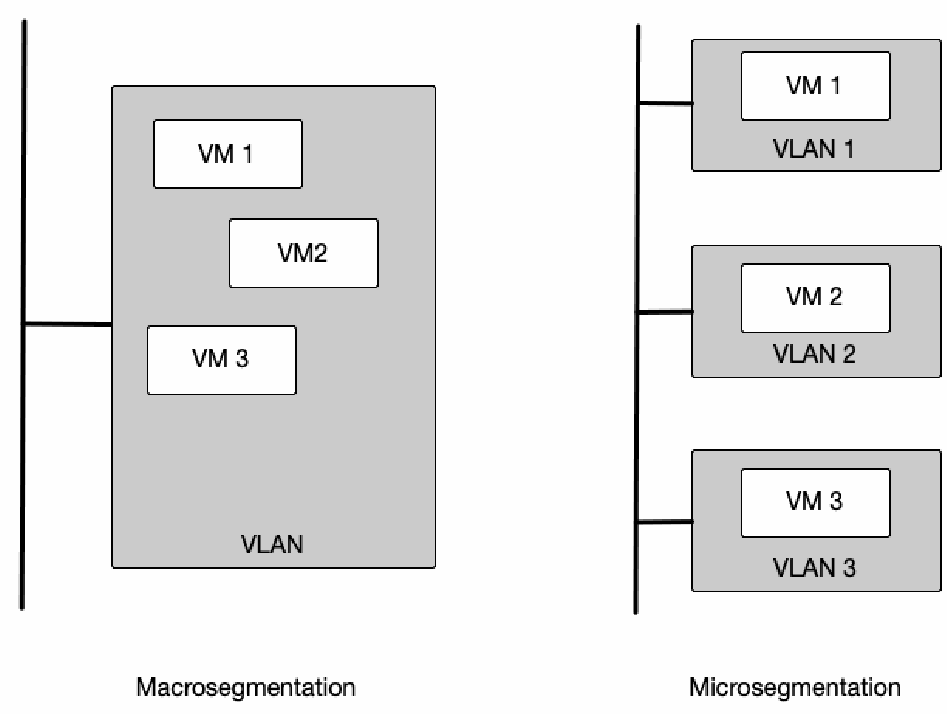
図1 セグメントベースのマイクロセグメンテーション。2 つの部分が左右に並ぶ。左の Macrosegmentation（マクロセグメンテーション）では、縦の線が 1 つの灰色の箱 VLAN につながり、その中に VM 1、VM2、VM 3 の 3 つの箱がある。右の Microsegmentation（マイクロセグメンテーション）では、縦の線が 3 つの別々の灰色の箱につながり、VLAN 1 に VM 1、VLAN 2 に VM 2、VLAN 3 に VM 3 が入っている。
Fig. 1. Segment-based Microsegmentation
図1 セグメントベースのマイクロセグメンテーション
The following are some approaches that are employed to implement microsegmentation [22]:
マイクロセグメンテーションの実装に用いられる方法のいくつかを次に示す[22]。
•Virtualized server-based approach: This approach is only applicable to networks that contain virtualized servers since it is implemented in the hypervisor. There are two possible mechanisms:
•仮想化サーバーベースの方法：この方法はハイパーバイザーで実装されるため、仮想化サーバーを含むネットワークにのみ適用できる。考えられる仕組みは2つある。
1.Using virtual firewalls inside a hypervisor to isolate traffic destined for different VMs inside the hypervisor
1.ハイパーバイザー内の仮想ファイアウォールを使い、そのハイパーバイザー内の異なるVMへ向かうトラフィックを隔離する方法
2.Using encapsulation techniques to create overlays (e.g., Virtual Extensible LAN (VXLAN)) that run on top of an underlying network that consists of IP addresses designations; access control policies are enforced on the hypervisor itself outside of the workload (application or microservice)
2.カプセル化技術を使い、IPアドレス指定で構成される基盤ネットワークの上で動作するオーバーレイ（仮想拡張LAN（VXLAN）など）を作成する方法。アクセス制御ポリシーは、ワークロード（アプリケーションまたはマイクロサービス）の外部にあるハイパーバイザー自体で施行される。
•Host-based microsegmentation: Alternatively (or additionally), host-based microsegmentation can be implemented using software agents on the endpoint artifacts (e.g., servers). It leverages native firewall functionality built into the host. Software agents can overlay a software-defined segmented network across data centers, cloud, bare metal, and hybrid environments. The agent provides context awareness and visibility for each workload and enables the definition and enforcement of fine-grained policies.
原本PDFの抜粋画像
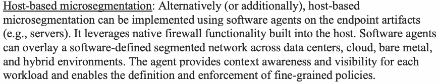
•ホストベースのマイクロセグメンテーション：代替として（または追加として）、ホストベースのマイクロセグメンテーションは、エンドポイントの構成要素（サーバーなど）上のソフトウェア・エージェントを用いて実装できる。これは、ホストに組み込まれたネイティブのファイアウォール機能を活用する。ソフトウェア・エージェントは、データセンター、クラウド、ベアメタル、ハイブリッド環境にまたがって、ソフトウェア定義のセグメント化ネットワークをオーバーレイできる。エージェントは各ワークロードのコンテキスト認識と可視性を提供し、きめ細かなポリシーの定義と施行を可能にする。
•c. Identity-based microsegmentation: Identity-based microsegmentation policies use contextual, application-driven identifiers (e.g., order processing front-end service can communicate with inventory back-end service) instead of network parameters (permit calls from 192.168.10.x subnet to 10.0.0.31) [24]. The identifiers assigned to services are cryptographic identities (as discussed in Section 5.1.1), which they use for mutual authentication and authorization during each service request and response. The advantages of this type of microsegmentation are:
•c. IDベースのマイクロセグメンテーション：IDベースのマイクロセグメンテーション・ポリシーは、ネットワーク・パラメーター（192.168.10.xサブネットから10.0.0.31への呼び出しを許可する）の代わりに、コンテキストに即したアプリケーション主導の識別子（例：受注処理フロントエンド・サービスは在庫バックエンド・サービスと通信できる）を使う[24]。サービスに割り当てられる識別子は暗号学的IDであり（第5.1.1節で論じたとおり）、サービスはこれを各サービス要求および応答の際の相互認証と認可に用いる。この種類のマイクロセグメンテーションの利点は次のとおりである。
•Policies based on service/application identities do not use any infrastructure-related variables (e.g., IP addresses, subnets), so these policies are environment-agnostic and provide the freedom for the services/applications to be migrated to different environments and still maintain the same policies.
•サービス／アプリケーションIDに基づくポリシーは、基盤に関連する変数（IPアドレス、サブネットなど）を一切使わない。そのため、これらのポリシーは環境に依存せず、サービス／アプリケーションを別の環境へ移行しても同じポリシーを維持できる自由をもたらす。
•Policies being independent of infrastructure enables them to be tested by merely exercising the application and observing the outcomes (e.g., trace of the sequence of service calls and requests/responses instead of configuring the infrastructure correctly for test runs).
•ポリシーが基盤から独立しているため、アプリケーションを実行して結果を観察するだけでポリシーを試験できる（例：試験実行のために基盤を正しく構成する代わりに、サービス呼び出しおよび要求／応答の順序を追跡する）。
•With the availability of tools for the declarative specification of policies through “policy as code” tools (PaC), microsegmentation policies can be defined and implemented by incorporating the code into automated workflows, such as CI/CD pipelines.
•「ポリシー・アズ・コード」ツール（PaC）によってポリシーを宣言的に指定するツールが利用できるため、そのコードをCI/CDパイプラインなどの自動化ワークフローに組み込むことで、マイクロセグメンテーション・ポリシーを定義し実装できる。
•Microsegmentation enables granular (fine-grained) access control by providing visibility into application call sequences/interdependencies and data flows through host-level tracking, thus enabling the enforcement of security policies for application traffic that is both north-south and east-west, irrespective of the environment (e.g., corporate data center or cloud infrastructure).
原本PDFの抜粋画像
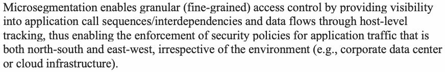
•マイクロセグメンテーションは、ホストレベルの追跡を通じてアプリケーションの呼び出し順序／相互依存関係およびデータフローを可視化することで、きめ細かな（細粒度の）アクセス制御を可能にする。これにより、環境（企業データセンターやクラウド基盤など）を問わず、南北と東西の両方のアプリケーション・トラフィックに対するセキュリティ・ポリシーの施行が可能になる。
The reason that identity-based microsegmentation is to be included under the enterprise network landscape is that it enables only valid network traffic between the various component services of the application due to the mutual authentication and authorization of the service identities, thus enabling the goals of ZTNA to be met [25].
IDベースのマイクロセグメンテーションを企業ネットワーク・ランドスケープに含めるべき理由は、サービスIDの相互認証と認可によって、アプリケーションの各構成サービス間で有効なネットワーク・トラフィックのみを可能にし、それによりZTNAの目標の達成を可能にするためである[25]。
5.2 Software-defined Perimeter (SDP)
5.2 ソフトウェア定義境界（SDP）
One conceptual underpinning for secure network access to IT resources is the software-defined perimeter (SDP) [31]. In SDP, the separation between networks is not defined by network address group or VLANs, making it network-agnostic. It is logically and dynamically defined for each user and each particular request. In other words, for each user request, the subset of IT resources to which the user has access is dynamically allocated irrespective of the location of the resource (e.g., corporate data center, branch office, private or public cloud). The salient principles of SDP include:
ITリソースへの安全なネットワーク・アクセスを支える概念的な基盤の一つが、ソフトウェア定義境界（SDP）である[31]。SDPでは、ネットワーク間の分離をネットワークアドレス群やVLANで定義しないため、ネットワークに依存しない。分離は、ユーザーごと、および個々の要求ごとに論理的かつ動的に定義される。言い換えれば、ユーザー要求ごとに、そのユーザーがアクセスできるITリソースの部分集合が、リソースの場所（企業データセンター、支社、プライベートクラウドまたはパブリッククラウドなど）にかかわらず動的に割り当てられる。SDPの主な原則には次のものがある。
•The SDP concept involves making all IT resources invisible (e.g., ports, workloads, and applications) and making them known and accessible only after the user is authenticated and authorized. Only a network connection between the user and the allowed IT resources is established, thus following the least privilege principle.
•SDPの概念では、すべてのITリソース（ポート、ワークロード、アプリケーションなど）を不可視にし、ユーザーが認証および認可された後にのみ、それらを認識可能かつアクセス可能にする。ユーザーと許可されたITリソースとの間のネットワーク接続のみが確立され、これにより最小権限の原則に従う。
•The access level determined by the previous process is continuously reevaluated during the user session and recalibrated if required. As the context surrounding the identity changes in real time, so can the user’s entitlements [31].
•前のプロセスで決定されたアクセス・レベルは、ユーザー・セッション中も継続的に再評価され、必要であれば再調整される。IDを取り巻くコンテキストがリアルタイムで変化するのに応じて、ユーザーの権限も変化し得る[31]。
•The attack surface is reduced by preventing lateral movement [32] through techniques like microsegmentation, as described in Section 5.1. With the increasing deployment of microservices, the inter-services resource requests (generator of east-west traffic) dominate external application requests (north-south traffic). Application of this principle thus secures east-west traffic.
•第5.1節で説明したマイクロセグメンテーションなどの技術によりラテラルムーブメント[32]を防止することで、攻撃対象領域が縮小される。マイクロサービスの導入が進むにつれ、サービス間のリソース要求（東西トラフィックの発生源）が、外部からのアプリケーション要求（南北トラフィック）を上回っている。したがって、この原則を適用することで東西トラフィックが保護される。
In all security frameworks for current enterprise network environments, the common principles that underlie application-specific requirements – such as low latency, high data transfer rates, and high reliability – that were applicable in previous network landscapes remain the same.
現在の企業ネットワーク環境向けのすべてのセキュリティ・フレームワークにおいて、以前のネットワーク・ランドスケープで当てはまっていた、アプリケーション固有の要件（低遅延、高いデータ転送速度、高信頼性など）の基礎にある共通原則は変わらない。
Secure Wide Area Network Infrastructure for an Enterprise Network
企業ネットワーク向けセキュア広域ネットワーク基盤
The wide area network (WAN) became an integral part of the enterprise network when organizations needed to connect their local area networks (LANs) across multiple geographically distributed locations (within the country and, in some cases, globally) starting in the 1980s. The initial WAN technology involved point-to-point (P2P) leased lines followed by frame relay. The first IP-based network was multiprotocol label switching (MPLS), which enabled multiple types of traffic – such as voice, video, and data – to travel on the same line. With the advent of technologies such as virtualization and increasing enterprise access to cloud services, enterprises have begun to adopt a new WAN technology called the software-defined wide area network (SD-WAN). SD-WAN technology removes the tight coupling between the control plane and data plane functions of the network and enables the centralized specification of various policies, such as access control, routing, and application traffic prioritization. Another development integrates all of the point security solutions provided by various network security appliances (Section 3) into a network security services infrastructure. Industry and industry consortiums use the term secure access service edge (SASE) [35] to refer to a comprehensive framework that offers wide area networking and various security services. SASE can be looked upon as the networking counterpart of the application’s service mesh, which provides a comprehensive set of application services, including security for cloud-native applications. Based on the above discussion, this section will focus on the following topics:
広域ネットワーク（WAN）は、1980年代以降、組織が地理的に分散した複数の拠点（国内、場合によっては世界規模）にまたがって自組織のローカルエリアネットワーク（LAN）を接続する必要が生じたときに、企業ネットワークの不可欠な要素となった。初期のWAN技術はポイント・ツー・ポイント（P2P）専用線であり、それにフレームリレーが続いた。最初のIPベースのネットワークはマルチプロトコル・ラベル・スイッチング（MPLS）であり、音声、映像、データなど複数の種類のトラフィックを同じ回線上で転送できるようにした。仮想化などの技術の登場と、企業によるクラウドサービスへのアクセスの増加に伴い、企業はソフトウェア定義広域ネットワーク（SD-WAN）と呼ばれる新たなWAN技術を採用し始めた。SD-WAN技術は、ネットワークの制御プレーン機能とデータプレーン機能の密結合を取り除き、アクセス制御、ルーティング、アプリケーション・トラフィックの優先順位付けなど、さまざまなポリシーの一元的な指定を可能にする。もう一つの進展は、さまざまなネットワーク・セキュリティ機器（第3節）が提供するすべてのポイント型セキュリティ・ソリューションを、ネットワーク・セキュリティサービス基盤に統合するものである。業界および業界コンソーシアムは、広域ネットワーキングと各種セキュリティサービスを提供する包括的なフレームワークを指して、セキュア・アクセス・サービス・エッジ（SASE）[35]という用語を用いている。SASEは、クラウドネイティブ・アプリケーション向けにセキュリティを含む包括的なアプリケーションサービス群を提供する、アプリケーションのサービスメッシュに対するネットワーク側の対応物と見ることができる。以上の議論に基づき、本節では次の主題に焦点を当てる。
•Requirements for a secure SD-WAN
•セキュアSD-WANの要件
•Specific requirements for SD-WANs for cloud access
•クラウドアクセス向けSD-WANの個別要件
•Requirements for an integrated security services architecture for SD-WAN
•SD-WAN向け統合セキュリティサービス・アーキテクチャの要件
Common Requirements for a Secure SD-WAN
セキュアSD-WANの共通要件
In addition to CSP-provided VPNs, a networking technology that provides network connectivity for accessing cloud-based services for enterprises is software-defined wide area networking (SD-WAN).
CSPが提供するVPNに加え、企業がクラウドベースのサービスにアクセスするためのネットワーク接続を提供するネットワーク技術として、ソフトウェア定義広域ネットワーク（SD-WAN）がある。
The design goals and common features in all SD-WAN offerings include:
すべてのSD-WAN製品に見られる設計目標と共通機能には、次のものがある。
•Extensive connectivity: To securely connect users located anywhere (e.g., home, public location, branch office, corporate office) to applications and resources hosted anywhere (e.g., data center, single or multiple cloud services) using any WAN transport (e.g., MPLS, Broadband Internet, 4G/LTE, 5G wireless)
•広範な接続性：あらゆるWAN伝送手段（MPLS、ブロードバンド・インターネット、4G/LTE、5G無線など）を用いて、どこにいるユーザー（自宅、公共の場所、支社、本社オフィスなど）も、どこにホストされたアプリケーションやリソース（データセンター、単一または複数のクラウドサービスなど）にも安全に接続すること
•Application awareness: To monitor the network traffic and dynamically choose the best path available based on (a) the type of network traffic, (b) network load conditions, and (c) the application’s business priority. This capability is enabled using techniques such as bandwidth utilization, load balancing, and the optimization of speed by reducing jitters, latency, and packet loss. Addressing an application’s business priority is only possible if the SD-WAN solution has the ability to identify different types of applications (e.g., messaging/email application, social media application, general storage-related applications, supply chain applications) and allocate routing priorities and WAN resources accordingly.
原本PDFの抜粋画像
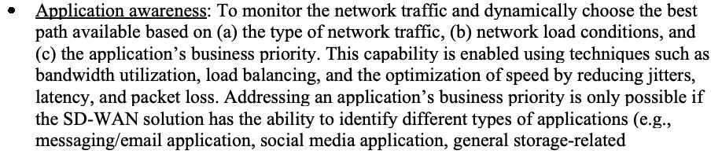
•アプリケーション認識：ネットワーク・トラフィックを監視し、(a) ネットワーク・トラフィックの種類、(b) ネットワーク負荷の状況、(c) アプリケーションの業務上の優先度に基づいて、利用可能な最適経路を動的に選択すること。この機能は、帯域幅の活用、負荷分散、およびジッター、遅延、パケット損失の低減による速度の最適化などの技法を用いて実現される。アプリケーションの業務上の優先度への対応は、SD-WANソリューションがさまざまな種類のアプリケーション（メッセージング／電子メール・アプリケーション、ソーシャルメディア・アプリケーション、一般的なストレージ関連アプリケーション、サプライチェーン・アプリケーションなど）を識別し、それに応じてルーティングの優先度とWANリソースを割り当てる能力を持つ場合にのみ可能である。
•Integration of security and networking functions: Use of appliances that contain a combination of networking and security functions (e.g., the presence of a firewall and secure web gateway [SWG] functions in a WAN router) [36]
原本PDFの抜粋画像
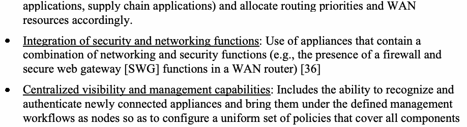
•セキュリティ機能とネットワーク機能の統合：ネットワーク機能とセキュリティ機能を組み合わせて備える機器の使用（例：WANルーターにファイアウォール機能とセキュア・ウェブ・ゲートウェイ［SWG］機能が存在すること）[36]
•Centralized visibility and management capabilities: Includes the ability to recognize and authenticate newly connected appliances and bring them under the defined management workflows as nodes so as to configure a uniform set of policies that cover all components.
•集中型の可視性および管理機能：新たに接続された機器を認識および認証し、それらをノードとして定義済みの管理ワークフローの下に取り込むことで、すべての構成要素を対象とする統一的なポリシー群を設定できるようにする能力を含む。
•Integration with remote LAN locations: An additional preferred but non-essential feature is the integration of WAN and LAN functions in a single appliance (the latter going by the name SD-Branch), which can be managed using a single management console, thus providing better visibility into both components. This feature enables the connectivity of SD-WAN into the local LAN at the remote branch offices.
•遠隔LAN拠点との統合：望ましいが必須ではない追加の機能として、WAN機能とLAN機能を単一の機器に統合すること（後者はSD-Branchの名で呼ばれる）が挙げられる。この機器は単一の管理コンソールで管理でき、それにより両方の構成要素に対する可視性が向上する。この機能により、遠隔の支社にあるローカルLANへSD-WANを接続できる。
Specific Requirements for SD-WANs for Cloud Access
クラウドアクセス向けSD-WANの個別要件
Enterprises can gain cloud access in two ways: 1) through the VPN services provided by the cloud providers or 2) by integrating their own SD-WAN with cloud providers’ private networks, often called the cloud WAN. In both scenarios, it is possible for enterprises to enforce their enterprise networking and security policies even though the endpoint resources are located in a cloud provider’s private network.
企業は2つの方法でクラウドアクセスを得ることができる。1) クラウドプロバイダーが提供するVPNサービスを利用する方法、または 2) 自社のSD-WANをクラウドプロバイダーのプライベートネットワーク（クラウドWANと呼ばれることが多い）と統合する方法である。いずれのシナリオでも、エンドポイントのリソースがクラウドプロバイダーのプライベートネットワーク内にあっても、企業は自社のネットワークポリシーおよびセキュリティポリシーを適用できる。
•In the first scenario, cloud access is enabled by the availability of the feature provided by many CSPs for each subscriber to establish their own private subnets and a networking connection between two of those private subnets (e.g., VPC peering). It is then possible for resources (e.g., VM instances) in either of the private subnets to communicate with each other as if they are within the same network.
•第1のシナリオでは、多くのCSPが提供する機能、すなわち各加入者が自身のプライベートサブネットを構築し、そのうち2つのプライベートサブネット間にネットワーク接続（例：VPCピアリング）を確立できる機能が利用できることにより、クラウドアクセスが可能になる。これにより、どちらのプライベートサブネット内のリソース（例：VMインスタンス）も、同一ネットワーク内にあるかのように相互に通信できる。
•In the second scenario (i.e., connectivity through SD-WAN), the same feature can be availed of once inside the CSP network. In addition, further orchestration of the cloud provider’s private network can be achieved by designing a customized overlay network on top of the cloud provider’s network with the latter as the underlay network. This feature is contingent upon CSPs offering API integrations for different SD-WAN offerings [38][39][40].
•第2のシナリオ（すなわち、SD-WAN経由の接続）では、CSPネットワーク内に入れば同じ機能を利用できる。加えて、クラウドプロバイダーのネットワークをアンダーレイネットワークとして、その上にカスタマイズしたオーバーレイネットワークを設計することで、クラウドプロバイダーのプライベートネットワークのさらなるオーケストレーションを実現できる。この機能は、CSPが各種SD-WAN製品向けのAPI連携を提供していることを前提とする[38][39][40]。
The overall advantages of being able to orchestrate the CSP private network for the subscriber enterprise are:
加入企業がCSPのプライベートネットワークをオーケストレーションできることによる全体的な利点は、次のとおりである。
•Complete end-to-end visibility between the “access endpoint” and IT resource (application or data) endpoint even though the latter is located in a cloud provider’s network
•ITリソース（アプリケーションまたはデータ）のエンドポイントがクラウドプロバイダーのネットワーク内にあっても、「アクセスエンドポイント」とそのエンドポイントとの間で完全なエンドツーエンドの可視性が得られる。
•Application of the network segmentation logic deployed for accessing on-premises resources to the cloud-based resources [37]
•オンプレミスリソースへのアクセスに適用しているネットワークセグメンテーションのロジックを、クラウド上のリソースにも適用できる[37]。
An architecture has emerged for managing enterprise networks that are connected to multiple CSPs. A portion of the industry calls the collection of appliances in this architecture a cloud network platform. The requirements for this multi-cloud networking platform are [41]:
複数のCSPに接続する企業ネットワークを管理するアーキテクチャが登場している。このアーキテクチャ内のアプライアンス群を、業界の一部では「クラウドネットワークプラットフォーム」と呼ぶ。このマルチクラウドネットワーキングプラットフォームには、次の要件がある[41]。
•It should deliver common operational visibility and control across native network access provided by multiple cloud providers. The primary challenge is that public cloud providers have different proprietary architectures using their own “constructs”. In order to provide a networking architecture that can “cross clouds”, one needs to leverage the cloud-native functionality (especially native cloud networking constructs) of each cloud; abstract that functionality with APIs; add advanced data plane features for high-availability, security, and operational visibility/control; and provide the tools to manage these features dynamically or automatically [42].
•複数のクラウドプロバイダーが提供するネイティブなネットワークアクセス全体にわたり、共通の運用上の可視性と制御を提供すべきである。主な課題は、各パブリッククラウドプロバイダーが独自の「構成要素」を用いた、互いに異なる専有アーキテクチャを採用していることである。「クラウドをまたぐ」ことのできるネットワークアーキテクチャを提供するには、各クラウドのクラウドネイティブ機能（特にネイティブなクラウドネットワーク構成要素）を活用し、その機能をAPIで抽象化し、高可用性、セキュリティ、運用上の可視性・制御のための高度なデータプレーン機能を追加し、これらの機能を動的または自動的に管理するツールを提供する必要がある[42]。
•It should deliver a common ingress and egress security policy for application environments (e.g., VPCs, VNETs, VCNs) across clouds.
•クラウドをまたぐアプリケーション環境（例：VPC、VNET、VCN）に対し、共通のイングレスおよびエグレスのセキュリティポリシーを提供すべきである。
•It should enable end-to-end encryption inside of the cloud as well as high-performance encryption from the data center to the cloud.
•クラウド内でのエンドツーエンド暗号化、およびデータセンターからクラウドへの高性能な暗号化を可能にすべきである。
•It should support automation for deployment and configuration.
•展開および構成の自動化をサポートすべきである。
Based on the above requirements, multi-cloud networking platform offerings have emerged with the following architectural elements:
上記の要件に基づき、次のアーキテクチャ要素を備えたマルチクラウドネットワーキングプラットフォーム製品が登場している。
•An abstraction layer sits on top of the native network access offered by individual CSPs to their services. This layer enables the enterprise to manage the entire enterprise network – consisting of connectivity to multiple clouds, intra-cloud connections, and the on-premises data center network fabrics – as one unit. To enable this, complete visibility into the entire enterprise network landscape is needed. Hence, this layer needs input from sophisticated observability and monitoring tools to carry out its functions.
•抽象化レイヤーが、個々のCSPが自社サービスに対して提供するネイティブなネットワークアクセスの上位に位置する。このレイヤーにより、企業は、複数のクラウドへの接続、クラウド内接続、およびオンプレミスのデータセンターネットワークファブリックから成る企業ネットワーク全体を、一つの単位として管理できる。これを可能にするには、企業ネットワークランドスケープ全体に対する完全な可視性が必要である。そのため、このレイヤーがその機能を果たすには、高度なオブザーバビリティツールおよび監視ツールからの入力が必要となる。
•A virtual network configuration that sits on the top of the network provided by each CSP for hosting CSC applications. The capability to define this virtual network configuration can be automated by a class of tools called IaC tools, which have features with network configuration definitions of major CSPs built in as plug-ins. These tools facilitate initial network resource provisioning and configuration and subsequent re-provisioning and re-configuration as application access requirements change.
•各CSPがCSCアプリケーションのホスティング用に提供するネットワークの上位に位置する仮想ネットワーク構成。この仮想ネットワーク構成を定義する機能は、IaCツールと呼ばれる種類のツールによって自動化できる。これらのツールは、主要CSPのネットワーク構成定義をプラグインとして組み込んだ機能を備えている。これらのツールは、ネットワークリソースの初期のプロビジョニングと構成、およびアプリケーションのアクセス要件の変化に応じたその後の再プロビジョニングと再構成を容易にする。
There are four industry trends [43] that may have security implications with regard to SD-WAN [44]:
SD-WAN[44]に関してセキュリティ上の影響を及ぼし得る業界動向[43]が4つある。
1.SD-WAN access is acquired as a cloud-based service under the umbrella of network as a service (NaaS), just like IaaS and SaaS.
1.SD-WANアクセスは、IaaSやSaaSと同様に、ネットワーク・アズ・ア・サービス（NaaS）の枠組みの下で、クラウドベースのサービスとして調達される。
2.Artificial Intelligence (AI)-based algorithms are used for monitoring networks for security-related conditions; for resiliency-improving measures, such as throttling for certain destinations; and for dynamic routing decisions to maintain QoS parameters, such as latency and bandwidth.
2.人工知能（AI）ベースのアルゴリズムを、セキュリティ関連の状態を監視するネットワーク監視、特定の宛先への通信制限などのレジリエンス向上策、および遅延や帯域幅などのQoSパラメーターを維持する動的ルーティングの判断に利用する。
3.Wireless networks are used for last mile connectivity using a 5G radio access network (RAN).
3.5G無線アクセスネットワーク（RAN）を使用し、ラストマイル接続に無線ネットワークを利用する。
4.Secure remote access functionalities provided by technologies such as VPN are combined into SD-WAN [45].
4.VPNなどの技術が提供するセキュアなリモートアクセス機能をSD-WANに統合する[45]。
Requirements for an Integrated Security Services Architecture for SD-WAN
SD-WAN向け統合セキュリティサービスアーキテクチャの要件
An integrated security services architecture for SD-WAN has both networking and security functions integrated within it. The network access and security function capabilities are offered as a cloud service that enterprises can access through strategic network locations spread over a wide area called point of presence (PoP). In 2019, Gartner coined the term “secure access service edge” (SASE) to denote an architecture that converges networking and security functions and delivers them at a global scale as a cloud service [46]. The networking and security services delivered by an SASE are not new but simply delivered together as a single package rather than through point security solutions (Section 3). The various points of connectivity from the enterprise to SASE PoPs are called enterprise edges. The enterprise edges can be either:
SD-WAN向け統合セキュリティサービスアーキテクチャには、ネットワーク機能とセキュリティ機能の両方が統合されている。ネットワークアクセス機能とセキュリティ機能は、ポイント・オブ・プレゼンス（PoP）と呼ばれる、広域に分散した戦略的なネットワーク拠点を通じて企業がアクセスできるクラウドサービスとして提供される。2019年、Gartnerは、ネットワーク機能とセキュリティ機能を融合させ、グローバル規模でクラウドサービスとして提供するアーキテクチャを指す用語として、「セキュアアクセスサービスエッジ」（SASE）という語を作った[46]。SASEが提供するネットワークサービスおよびセキュリティサービスは新しいものではなく、ポイントセキュリティソリューション（第3節）を通じてではなく、単一のパッケージとしてまとめて提供されるにすぎない。企業からSASEのPoPへのさまざまな接続点を、企業エッジと呼ぶ。企業エッジは、次のいずれかである。
•Clients – Users accessing through desktops, laptops, and mobile devices from either branch offices or remote locations, such as their homes or IoTs
•クライアント：支社、または自宅やIoTなどの遠隔地から、デスクトップ、ノートパソコン、モバイルデバイスを介してアクセスするユーザー
•IT resources – Internal applications hosted in data centers, branch offices, or the cloud (e.g., SaaS, IaaS)
•ITリソース：データセンター、支社、またはクラウド（例：SaaS、IaaS）でホストされる内部アプリケーション
The SASE network infrastructure thus becomes an integral part of the enterprise network whenever one or more of the enterprise edges are connected to various PoPs of SASE cloud services. The four primary functions delivered by SASE are [46]:
したがって、企業エッジの1つ以上がSASEクラウドサービスのさまざまなPoPに接続されるときは常に、SASEネットワークインフラストラクチャは企業ネットワークの不可欠な一部となる。SASEが提供する主な機能は次の4つである[46]。
1.Optimization of network traffic for different types of traffic – Reduce latency and improve availability
1.各種トラフィックに対するネットワークトラフィックの最適化：遅延を低減し、可用性を向上させる
2.Access control for different types of IT resources – Applications or databases under different administrative domains (e.g., subscribed SaaS, open web)
2.各種ITリソースへのアクセス制御：異なる管理ドメインに属するアプリケーションやデータベース（例：契約中のSaaS、一般公開されたウェブサイト）。
3.Threat prevention – Monitoring, gathering threat and attack information, and performing remedial action
3.脅威の防止：監視、脅威および攻撃に関する情報の収集、ならびに是正措置の実行
4.Enables the application of uniform security policy across all users, regardless of location; centralizes visibility across virtually all users and devices into a single dashboard; scales security as the organization expands; and reduces the number of physical security appliances that they manage [12]
4.場所を問わずすべてのユーザーに統一されたセキュリティポリシーを適用できる。ほぼすべてのユーザーとデバイスを単一のダッシュボードで一元的に可視化し、組織の拡大に合わせてセキュリティを拡張できるほか、管理対象となる物理的なセキュリティアプライアンスの数を削減できる[12]。
Some of the structural features of SASE offerings are:
SASE製品が備える構造上の特徴には、次のものがある。
•Globally distributed point of presence (PoP) – A global SD-WAN service with its own private backbone network consisting of worldwide points of presence (PoPs) intended to minimize latency problems. In some instances, major cloud vendors’ PoPs may also be leveraged.
原本PDFの抜粋画像
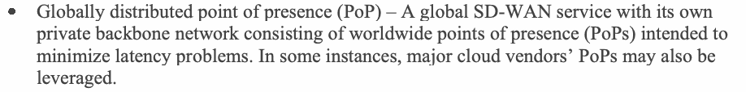
•グローバルに分散したポイント・オブ・プレゼンス（PoP）：遅延の問題を最小限に抑えることを意図した、世界各地のポイント・オブ・プレゼンス（PoP）から成る独自のプライベートバックボーンネットワークを持つグローバルSD-WANサービス。場合によっては、大手クラウドベンダーのPoPも活用されることがある。
•Security agent on devices – The security agent on the end user’s device undertakes networking decisions and directs traffic from different applications. Specific capabilities include dynamically allowing or denying connections to services and applications based on an organization’s defined business rules.
•デバイス上のセキュリティエージェント：エンドユーザーのデバイスにあるセキュリティエージェントがネットワークに関する判断を行い、各アプリケーションのトラフィックを転送する。具体的には、組織が定めたビジネスルールに基づき、サービスやアプリケーションへの接続を動的に許可または拒否する機能がある。
The following are the minimal security services found in most commercial SASE offerings are:
ほとんどの商用SASE製品に見られる最低限のセキュリティサービスは、次のとおりである。
•Firewall services
•ファイアウォールサービス
•Secure web gateway services
•セキュアウェブゲートウェイサービス
•Anti-malware services
•マルウェア対策サービス
•IPS services
•IPSサービス
•CASB services
•CASBサービス
•DLP services
•DLPサービス
Some of the advanced security features found in SASE offerings include:
SASE製品に見られる高度なセキュリティ機能には、次のものがある。
•Browser isolation technology: This is often combined with secure web gateway solutions and provides improved web activity security to tackle threats in real time.
原本PDFの抜粋画像
•ブラウザー分離技術： セキュアウェブゲートウェイソリューションと組み合わせられることが多く、 ウェブ上の活動のセキュリティを高め、脅威にリアルタイムで対処する。
•Continuous adaptive risk and trust assessment (CARTA) strategy: This strategy involves constantly monitoring sessions and performs adaptive behavior analysis on monitoring parameters to dynamically change security levels and permissions if the trust profile (e.g., trust deficit) of a device changes.
•継続的適応型リスク・信頼評価（CARTA）戦略：セッションを継続的に監視し、監視対象のパラメーターに対して適応的な振る舞い分析を行う。デバイスの信頼プロファイル（例：信頼度の低下）が変化した場合は、セキュリティレベルと権限を動的に変更する。
Summary and Conclusions
まとめと結論
The purpose of this document is to provide insights into the current enterprise network landscape in terms of topology, traffic flows, and security threats. It posits that changes in application architecture and technologies (e.g., monolithic to microservices-based, bare metal to virtualization/containers) and increased subscriptions to various types of cloud services (e.g., IaaS, SaaS) are drivers of the current state of enterprise networks. This document outlines the limitations of existing network access security assumptions and technologies due to changes in network topologies in modern enterprise networks. The emergence of new network appliances (e.g., CASB), enhanced features in existing appliances (e.g., firewalls), network automation tools for gathering data for visibility/monitoring, threat detection and remedial actions, and tools for automated network provisioning for different public CSP environments (enabled by IaC tools invoked as part of the smart workflows called CI/CD pipelines defined under the DevSecOps paradigm) are all discussed under point security solutions. This is followed by a discussion of various networking configurations that each implement a specific security function (e.g., user authentication, device authentication). A separate section is devoted to discussing the salient features of an evolving security framework for an enterprise-wide network called ZTNA, as well as the two predominant network configurations (i.e., microsegmentation and SDP) for preventing attack escalation to meet one of the goals of ZTNA. Finally, this document discusses the latest WAN technologies that form part of the current enterprise network landscape, as well as the features of WAN offerings with global PoP and integrated security services called SASE.
本書の目的は、トポロジー、トラフィックフロー、セキュリティ脅威の観点から、現在の企業ネットワークの状況についての知見を提供することである。本書は、アプリケーションアーキテクチャと技術の変化（例：モノリシックからマイクロサービスベースへ、ベアメタルから仮想化／コンテナへ）や、さまざまな種類のクラウドサービス（例：IaaS、SaaS）の利用拡大が、現在の企業ネットワークの状態をもたらした要因であると位置づける。本書では、現代の企業ネットワークでネットワークトポロジーが変化したことに伴う、既存のネットワークアクセスセキュリティに関する前提と技術の限界を概説する。新しいネットワークアプライアンス（例：CASB）の登場、既存アプライアンス（例：ファイアウォール）の機能強化、可視化／監視のためのデータ収集、脅威検知および是正措置のためのネットワーク自動化ツール、ならびに各種パブリックCSP環境向けの自動ネットワークプロビジョニングのためのツール（DevSecOpsパラダイムの下で定義される、CI/CDパイプラインと呼ばれるスマートワークフローの一部として呼び出されるIaCツールによって実現される）は、いずれもポイントセキュリティソリューションとして論じる。続いて、それぞれが特定のセキュリティ機能（例：ユーザー認証、デバイス認証）を実装する各種のネットワーク構成を論じる。別の節では、ZTNAと呼ばれる、企業全体のネットワークを対象とする発展途上のセキュリティフレームワークの主な特徴と、ZTNAの目標の一つを満たすために攻撃の拡大を防ぐ、2つの主要なネットワーク構成（すなわち、マイクロセグメンテーションとSDP）を論じる。最後に、現在の企業ネットワークの状況の一部を成す最新のWAN技術と、SASEと呼ばれる、グローバルPoPおよび統合セキュリティサービスを備えたWANサービスの特徴を論じる。
References
参考文献
[1] Craven C (2019) What is the Difference between Edge Computing and MEC. Available at https://www.sdxcentral.com/edge/definitions/whats-the-difference-between-edge-computing-and-mec/
[1] Craven C（2019）「エッジコンピューティングとMECの違い」（What is the Difference between Edge Computing and MEC）。参照先: https://www.sdxcentral.com/edge/definitions/whats-the-difference-between-edge-computing-and-mec/
[2] The Monitor Issue 13 (2020) VPN Vulnerabilities Tied to Raising Data Exposure, Ransomware. Available at https://www.kroll.com/en/insights/publications/cyber/monitor/vpn-vulnerabilities-rising-data-exposure-ransomware
[2] The Monitor 第13号（2020）「VPNの脆弱性とデータ漏えいリスク、ランサムウェアの増加との関連」（VPN Vulnerabilities Tied to Raising Data Exposure, Ransomware）。参照先: https://www.kroll.com/en/insights/publications/cyber/monitor/vpn-vulnerabilities-rising-data-exposure-ransomware
[3] Hardcastle JL (2018) Why CASB Is the Fastest Growing Security Category. Available at https://www.sdxcentral.com/articles/news/casb-fastest-growing-security-category-ever/2018/02/
[3] Hardcastle JL（2018）「CASBが最も急速に成長しているセキュリティ分野である理由」（Why CASB Is the Fastest Growing Security Category）。参照先: https://www.sdxcentral.com/articles/news/casb-fastest-growing-security-category-ever/2018/02/
[4] Proofpoint (2021) Getting Started with CASB. Available at https://www.proofpoint.com/us/resources/white-papers/getting-started-with-casb
[4] Proofpoint（2021）「CASBの利用開始ガイド」（Getting Started with CASB）。参照先: https://www.proofpoint.com/us/resources/white-papers/getting-started-with-casb
[5] Lookout (2021) Embracing Zero Trust: A Guide for Agencies to Address the Cybersecurity Executive Order. Available at https://www.govexec.com/media/embracing-zero-trust-guide-agencies-address-cybersecurity-executive-order.pdf
[5] Lookout（2021）「ゼロトラストの導入：サイバーセキュリティに関する大統領令に対応するための機関向けガイド」（Embracing Zero Trust: A Guide for Agencies to Address the Cybersecurity Executive Order）。参照先: https://www.govexec.com/media/embracing-zero-trust-guide-agencies-address-cybersecurity-executive-order.pdf
[6] Cato Networks (2022) Network Firewall: Components, Solution Types, and Future Trends. Available at https://www.catonetworks.com/network-firewall/
[6] Cato Networks（2022）「ネットワークファイアウォール：構成要素、ソリューションの種類、今後の動向」（Network Firewall: Components, Solution Types, and Future Trends）。参照先: https://www.catonetworks.com/network-firewall/
[7] Palo Alto Networks (2022) Advanced URL Filtering. Available at https://www.paloaltonetworks.com/network-security/advanced-url-filtering
[7] Palo Alto Networks（2022）「高度なURLフィルタリング」（Advanced URL Filtering）。参照先: https://www.paloaltonetworks.com/network-security/advanced-url-filtering
[8] Oswal A (2022) Cloud NGFW: Managed Next-Generation Firewall Service for AWS. Available at https://www.paloaltonetworks.com/blog/2022/03/next-generation-firewall-service-for-aws/
[8] Oswal A（2022）「Cloud NGFW：AWS向けマネージド次世代ファイアウォールサービス」（Cloud NGFW: Managed Next-Generation Firewall Service for AWS）。参照先: https://www.paloaltonetworks.com/blog/2022/03/next-generation-firewall-service-for-aws/
[9] Cato Networks (2022) Firewall Security: Understanding Your Options. Available at https://www.catonetworks.com/network-firewall/firewall-security/
[9] Cato Networks（2022）「ファイアウォールセキュリティ：選択肢を理解する」（Firewall Security: Understanding Your Options）。参照先: https://www.catonetworks.com/network-firewall/firewall-security/
[10] F5 Networks (2022) WAAP Buying Guide. Available at https://media.bitpipe.com/io_15x/io_158522/item_2439191/EBOOK-SEC-798086545-waap-buying-guide_FNL%20%281%29.pdf
[10] F5 Networks（2022）「WAAP購入ガイド」（WAAP Buying Guide）。参照先: https://media.bitpipe.com/io_15x/io_158522/item_2439191/EBOOK-SEC-798086545-waap-buying-guide_FNL%20%281%29.pdf
[11] F5 Networks (2022) Choose the WAF That’s Right for You. Available at https://media.bitpipe.com/io_15x/io_158522/item_2439191/EBOOK-SEC-798087620-which-waf-is-right-for-you-refresh-FNL%20%281%29.pdf
[11] F5 Networks（2022）「自社に適したWAFを選ぶ」（Choose the WAF That’s Right for You）。参照先: https://media.bitpipe.com/io_15x/io_158522/item_2439191/EBOOK-SEC-798087620-which-waf-is-right-for-you-refresh-FNL%20%281%29.pdf
[12] AT&T (2020) The essential guide to secure web gateway. Available at https://cybersecurity.att.com/resource-center/white-papers/essential-guide-to-secure-web-gateway
[12] AT&T（2020）「セキュアウェブゲートウェイの必須ガイド」（The essential guide to secure web gateway）。参照先: https://cybersecurity.att.com/resource-center/white-papers/essential-guide-to-secure-web-gateway
[13] Itential (2020) Redefining Network Configuration Management. Available at https://www.itential.com/resource/ebook/redefining-network-configuration-compliance-across-hybrid-infrastructure/
[13] Itential（2020）「ネットワーク構成管理の再定義」（Redefining Network Configuration Management）。参照先: https://www.itential.com/resource/ebook/redefining-network-configuration-compliance-across-hybrid-infrastructure/
[14] McGillicuddy S (2022) Taking a Strategic Approach to Network Operations. Available at https://media.bitpipe.com/io_16x/io_161947/item_2553630/NBT002b_NetBrain-WP_Final%20%281%29.pdf
[14] McGillicuddy S（2022）「ネットワーク運用への戦略的アプローチ」（Taking a Strategic Approach to Network Operations）。参照先: https://media.bitpipe.com/io_16x/io_161947/item_2553630/NBT002b_NetBrain-WP_Final%20%281%29.pdf
[15] Palo Alto Networks (2020) The State of SOAR Report, 2020. Available at https://media.bitpipe.com/io_15x/io_154375/item_2268964/the-state-of-soar-report-2020.pdf
[15] Palo Alto Networks（2020）「SOARの現状レポート 2020年版」（The State of SOAR Report, 2020）。参照先: https://media.bitpipe.com/io_15x/io_154375/item_2268964/the-state-of-soar-report-2020.pdf
[16] Aviatrix (2021) DevOps Guide to Multi-cloud Networking. Available at https://media.bitpipe.com/io_15x/io_158772/item_2444655/devops-guide-to-multi-cloud-networking%20%281%29.pdf.
[16] Aviatrix（2021）「マルチクラウドネットワーキングのためのDevOpsガイド」（DevOps Guide to Multi-cloud Networking）。参照先: https://media.bitpipe.com/io_15x/io_158772/item_2444655/devops-guide-to-multi-cloud-networking%20%281%29.pdf.
[17] Itential (2021) Automating Multi-Cloud Networking. Available at https://www.itential.com/solutions/automation-use-cases/multi-cloud-network-automation/#:~:text=Automating%20Multi%2DCloud%20Networking&text=By%20leveraging%20the%20right%20automation,automate%20the%20Network%20of%20Clouds
[17] Itential（2021）「マルチクラウドネットワーキングの自動化」（Automating Multi-Cloud Networking）。参照先: https://www.itential.com/solutions/automation-use-cases/multi-cloud-network-automation/#:~:text=Automating%20Multi%2DCloud%20Networking&text=By%20leveraging%20the%20right%20automation,automate%20the%20Network%20of%20Clouds
[18] Verizon (2021) The future of networking is here. Available at https://media.erepublic.com/document/Network-as-a-Service_Solution_Brief.pdf
[18] Verizon（2021）「ネットワーキングの未来はここにある」（The future of networking is here）。参照先: https://media.erepublic.com/document/Network-as-a-Service_Solution_Brief.pdf
[19] Miller LC (2021) Data Center and Hybrid Cloud Security – E-Book. https://www.paloaltonetworks.com/resources/ebooks/data-center-and-hybrid-cloud-security-for-dummies
[19] Miller LC（2021）「データセンターとハイブリッドクラウドのセキュリティ：電子書籍」（Data Center and Hybrid Cloud Security – E-Book）。 https://www.paloaltonetworks.com/resources/ebooks/data-center-and-hybrid-cloud-security-for-dummies
[20] Vertocci B (2021) JSON Web Token (JWT) Profile for OAuth 2.0 Access Tokens. (Internet Engineering Task Force (IETF) Network Working Group), IETF Request for Comments (RFC) 9068. https://datatracker.ietf.org/doc/html/rfc9068
[20] Vertocci B（2021）「OAuth 2.0アクセストークンのためのJSON Web Token（JWT）プロファイル」（JSON Web Token (JWT) Profile for OAuth 2.0 Access Tokens）。（Internet Engineering Task Force（IETF）ネットワークワーキンググループ）、IETF Request for Comments（RFC）9068。https://datatracker.ietf.org/doc/html/rfc9068
[21] ColorTokens (2022) What is Micro-segmentation? Available at https://colortokens.com/micro-segmentation/
[21] ColorTokens（2022）「マイクロセグメンテーションとは何か」（What is Micro-segmentation?）。参照先: https://colortokens.com/micro-segmentation/
[22] Mandal A (2020) Microsegmentation – the quintessential architecture for Zero Trust. Available at https://medium.com/@anandadip/microsegmentation-the-quintessential-architecture-for-zero-trust-344715990c8e
[22] Mandal A（2020）「マイクロセグメンテーション：ゼロトラストの典型的アーキテクチャ」（Microsegmentation – the quintessential architecture for Zero Trust）。参照先: https://medium.com/@anandadip/microsegmentation-the-quintessential-architecture-for-zero-trust-344715990c8e
[23] Kollimarla S (2021) How Micro-Segmentation for Data Centers Works. Available at https://colortokens.com/blog/data-center-micro-segmentation/
[23] Kollimarla S（2021）「データセンター向けマイクロセグメンテーションの仕組み」（How Micro-Segmentation for Data Centers Works）。参照先: https://colortokens.com/blog/data-center-micro-segmentation/
[24] Palo Alto Networks (2021) Prisma Cloud Identity-based Microsegmentation. Available at https://media.bitpipe.com/io_15x/io_157597/item_2439737/prisma-cloud-identity-based-microsegmentation.pdf
[24] Palo Alto Networks（2021）「Prisma Cloudのアイデンティティベースのマイクロセグメンテーション」（Prisma Cloud Identity-based Microsegmentation）。参照先: https://media.bitpipe.com/io_15x/io_157597/item_2439737/prisma-cloud-identity-based-microsegmentation.pdf
[25] Slattery T (2022) How to implement network segmentation for better security. Available at https://www.techtarget.com/searchnetworking/tip/How-to-implement-network-segmentation-for-better-security
[25] Slattery T（2022）「セキュリティを高めるネットワークセグメンテーションの実装方法」（How to implement network segmentation for better security）。参照先: https://www.techtarget.com/searchnetworking/tip/How-to-implement-network-segmentation-for-better-security
[26] Frazier S (2021) Why the cyber EO made zero trust no longer a suggestion. Available at https://federalnewsnetwork.com/federal-insights/2021/09/why-the-cyber-eo-made-zero-trust-no-longer-a-suggestion/
[26] Frazier S（2021）「サイバーセキュリティに関する大統領令によってゼロトラストがもはや推奨事項ではなくなった理由」（Why the cyber EO made zero trust no longer a suggestion）。参照先: https://federalnewsnetwork.com/federal-insights/2021/09/why-the-cyber-eo-made-zero-trust-no-longer-a-suggestion/
[27] Brasen S (2020) Contextual Awareness: Advancing Identity and Access Management to the Next Level of Security Effectiveness. Available at https://dbac8a2e962120c65098-4d6abce208e5e17c2085b466b98c2083.ssl.cf1.rackcdn.com/advancing-identity-access-management-to-next-level-security-effectiveness-pdf-7-w-7727.pdf
[27] Brasen S（2020）「コンテキスト認識：アイデンティティ・アクセス管理を次のレベルのセキュリティ有効性へ進める」（Contextual Awareness: Advancing Identity and Access Management to the Next Level of Security Effectiveness）。参照先: https://dbac8a2e962120c65098-4d6abce208e5e17c2085b466b98c2083.ssl.cf1.rackcdn.com/advancing-identity-access-management-to-next-level-security-effectiveness-pdf-7-w-7727.pdf
[28] Appgate (2020) SDP and Risky Devices. Available at https://www.appgate.com/blog/sdp-and-risky-devices-dynamic-controls-for-secure-access
[28] Appgate（2020）「SDPとリスクのあるデバイス」（SDP and Risky Devices）。参照先: https://www.appgate.com/blog/sdp-and-risky-devices-dynamic-controls-for-secure-access
[29] Srinivas S (2020) Democratizing Zero Trust with an expanded BeyondCorp Alliance. Available at https://cloud.google.com/blog/products/identity-security/google-cloud-announces-new-partners-in-its-beyondcorp-alliance
[29] Srinivas S（2020）「拡張されたBeyondCorp Allianceによるゼロトラストの普及」（Democratizing Zero Trust with an expanded BeyondCorp Alliance）。参照先: https://cloud.google.com/blog/products/identity-security/google-cloud-announces-new-partners-in-its-beyondcorp-alliance
[30] Tanium (2021) Tanium Insights: It’s Time to Ditch the VPN for Zero Trust. Available at https://site.tanium.com/rs/790-QFJ-925/images/EB-ZeroTrust.pdf
[30] Tanium（2021）「Tanium Insights：VPNを捨ててゼロトラストへ移行する時」（Tanium Insights: It’s Time to Ditch the VPN for Zero Trust）。参照先: https://site.tanium.com/rs/790-QFJ-925/images/EB-ZeroTrust.pdf
[31] Scheels C (2021) VPN VS. ZTNA VS. SDP VS. NAC: What’s the Difference? Available at https://www.appgate.com/blog/vpn-vs-ztna-vs-sdp-vs-nac
[31] Scheels C（2021）「VPN、ZTNA、SDP、NACの違いとは」（VPN VS. ZTNA VS. SDP VS. NAC: What’s the Difference?）。参照先: https://www.appgate.com/blog/vpn-vs-ztna-vs-sdp-vs-nac
[32] QTS (2020) Driving Data Center Innovation with Microservices. Available at https://media.bitpipe.com/io_15x/io_155464/item_2314862/QTS_Whitepaper_SDP.pdf
[32] QTS（2020）「マイクロサービスによるデータセンターのイノベーション推進」（Driving Data Center Innovation with Microservices）。参照先: https://media.bitpipe.com/io_15x/io_155464/item_2314862/QTS_Whitepaper_SDP.pdf
[33] Rose S, Borchert O, Mitchell S, Connelly S (2020) Zero Trust Architecture. (National Institute of Standards and Technology, Gaithersburg, MD), NIST Special Publication (SP) NIST SP 800-207. https://doi.org/10.6028/NIST.SP.800-207
[33] Rose S、Borchert O、Mitchell S、Connelly S（2020）「ゼロトラストアーキテクチャ」（Zero Trust Architecture）。米国国立標準技術研究所（NIST、メリーランド州ゲイザースバーグ）、NIST Special Publication（SP）NIST SP 800-207。https://doi.org/10.6028/NIST.SP.800-207
[34] Appgate (2021) 5 Steps for Successful VPN to ZTNA Migration. Available at https://d3aafpijpsak2t.cloudfront.net/docs/VPN_to_ZTNA_migration_ebook-6.pdf
[34] Appgate（2021）「VPNからZTNAへの移行を成功させる5つのステップ」（5 Steps for Successful VPN to ZTNA Migration）。参照先: https://d3aafpijpsak2t.cloudfront.net/docs/VPN_to_ZTNA_migration_ebook-6.pdf
[35] Shread P (2020) What is SASE and How does it Work? Available at https://www.esecurityplanet.com/networks/sase/
[35] Shread P（2020）「SASEとは何か、どのように機能するのか」（What is SASE and How does it Work?）。参照先: https://www.esecurityplanet.com/networks/sase/
[36] Fortinet (2022) Required Capabilities for Effective and Secure SD-WAN: The Network Leader’s Guide. Available at https://www.fortinet.com/content/dam/maindam/PUBLIC/02_MARKETING/02_Collateral/eBooks/eb-network-leaders-guide-to-secure-SD-WAN.pdf.
[36] Fortinet（2022）「効果的でセキュアなSD-WANに必要な機能：ネットワークリーダー向けガイド」（Required Capabilities for Effective and Secure SD-WAN: The Network Leader’s Guide）。参照先: https://www.fortinet.com/content/dam/maindam/PUBLIC/02_MARKETING/02_Collateral/eBooks/eb-network-leaders-guide-to-secure-SD-WAN.pdf.
[37] Mann T (2021) AWS Cloud WAN Parries Google, Microsoft. Available at https://www.sdxcentral.com/articles/news/aws-cloud-wan-parries-google-microsoft/2021/12/
[37] Mann T（2021）「AWS Cloud WANがGoogleとMicrosoftに対抗」（AWS Cloud WAN Parries Google, Microsoft）。参照先: https://www.sdxcentral.com/articles/news/aws-cloud-wan-parries-google-microsoft/2021/12/
[38] Mann T (2021) Is Multi-Cloud SD-WAN’s Final Destination? Available at https://www.sdxcentral.com/articles/news/is-multi-cloud-sd-wans-final-destination/2021/12/
[38] Mann T（2021）「マルチクラウドはSD-WANの最終到達点か」（Is Multi-Cloud SD-WAN’s Final Destination?）。参照先: https://www.sdxcentral.com/articles/news/is-multi-cloud-sd-wans-final-destination/2021/12/
[39] Mann T (2021) Google Cloud Drives SD-Underlays into Cisco SD-Wan. Available at https://www.sdxcentral.com/articles/news/google-cloud-drives-sd-underlays-into-cisco-sd-wan/2021/03/
[39] Mann T（2021）「Google CloudがCisco SD-WANにSDアンダーレイを導入」（Google Cloud Drives SD-Underlays into Cisco SD-Wan）。参照先: https://www.sdxcentral.com/articles/news/google-cloud-drives-sd-underlays-into-cisco-sd-wan/2021/03/
[40] Mann T (2021) Fortinet Fortifies Microsoft Azure vWAN With SD-WAN Firewalls. Available at https://www.sdxcentral.com/articles/news/fortinet-fortifies-microsoft-azure-vwan-with-sd-wan-firewalls/2021/11/
[40] Mann T（2021）「FortinetがSD-WANファイアウォールでMicrosoft Azure vWANを強化」（Fortinet Fortifies Microsoft Azure vWAN With SD-WAN Firewalls）。参照先: https://www.sdxcentral.com/articles/news/fortinet-fortifies-microsoft-azure-vwan-with-sd-wan-firewalls/2021/11/
[41] Aviatrix (2021) The Security Architect’s Guide to Multi-Cloud Networking. Available at https://media.bitpipe.com/io_15x/io_158772/item_2444655/security-architects-guide-multi-cloud-networking-v2%20%281%29.pdf
[41] Aviatrix（2021）「マルチクラウドネットワーキングに関するセキュリティアーキテクト向けガイド」（The Security Architect’s Guide to Multi-Cloud Networking）。参照先: https://media.bitpipe.com/io_15x/io_158772/item_2444655/security-architects-guide-multi-cloud-networking-v2%20%281%29.pdf
[42] Aviatrix (2020) Multi-Cloud Networking. Available at https://aviatrix.com/wp-content/uploads/2020/07/Multi-Cloud-Networking-by-Futuriom-July2020.pdf
[42] Aviatrix（2020）「マルチクラウドネットワーキング」（Multi-Cloud Networking）。参照先: https://aviatrix.com/wp-content/uploads/2020/07/Multi-Cloud-Networking-by-Futuriom-July2020.pdf
[43] Robb D (2022) Top Software-Defined SD-WAN Trends. Available at https://www.enterprisestorageforum.com/networking/sd-wan-trends/
[43] Robb D（2022）「ソフトウェア定義SD-WANの主な動向」（Top Software-Defined SD-WAN Trends）。参照先: https://www.enterprisestorageforum.com/networking/sd-wan-trends/
[44] TechTarget (2022) 4 Key SD-WAN Trends to Watch in 2022. Available at https://media.bitpipe.com/io_14x/io_148038/item_2494980/4%20key%20SD-WAN%20trends%20to%20watch%20in%202022.pdf
[44] TechTarget（2022）「2022年に注目すべきSD-WANの4つの重要な動向」（4 Key SD-WAN Trends to Watch in 2022）。参照先: https://media.bitpipe.com/io_14x/io_148038/item_2494980/4%20key%20SD-WAN%20trends%20to%20watch%20in%202022.pdf
[45] Doyle L (2020) The pros and cons of SD-WAN and remote access. Available at https://www.techtarget.com/searchnetworking/tip/The-pros-and-cons-of-SD-WAN-and-remote-access
[45] Doyle L（2020）「SD-WANとリモートアクセスの長所と短所」（The pros and cons of SD-WAN and remote access）。参照先: https://www.techtarget.com/searchnetworking/tip/The-pros-and-cons-of-SD-WAN-and-remote-access
[46] Cato Networks (2021) 5 Questions to Ask Your SASE Provider. Available at https://go.catonetworks.com/rs/245-RJK-441/images/5_Questions_to_Ask_Your_SASE_Provider.pdf
[46] Cato Networks（2021）「SASEプロバイダーに尋ねるべき5つの質問」（5 Questions to Ask Your SASE Provider）。参照先: https://go.catonetworks.com/rs/245-RJK-441/images/5_Questions_to_Ask_Your_SASE_Provider.pdf
[47] Spiffe.io (2021) SPIFFE Concepts. Available at https://spiffe.io/docs/latest/spiffe-about/spiffe-concepts/#trust-bundle
[47] Spiffe.io（2021）「SPIFFEの概念」（SPIFFE Concepts）。参照先: https://spiffe.io/docs/latest/spiffe-about/spiffe-concepts/#trust-bundle
[48] Vmware (2022) What is Unified Endpoint Management (UEM)? Available at https://www.vmware.com/topics/glossary/content/unified-endpoint-management.html
[48] VMware（2022）「統合エンドポイント管理（UEM）とは何か」（What is Unified Endpoint Management (UEM)?）。参照先: https://www.vmware.com/topics/glossary/content/unified-endpoint-management.html
[49] Office of Management and Budget (2022) Moving the U.S. Government Toward Zero Trust Cybersecurity Principles. (The White House, Washington, DC), OMB Memorandum M-22-09, January 26, 2022. Available at https://www.whitehouse.gov/wp-content/uploads/2022/01/M-22-09.pdf
[49] 米国行政管理予算局（OMB、2022）「米国政府をゼロトラストサイバーセキュリティ原則へ移行させる」（Moving the U.S. Government Toward Zero Trust Cybersecurity Principles）。ホワイトハウス（ワシントンDC）、OMB Memorandum M-22-09、2022年1月26日。参照先: https://www.whitehouse.gov/wp-content/uploads/2022/01/M-22-09.pdf
[50] Grassi P.A, Garcia M.E, Fenton J.L (2020) Digital Identity Guidelines. (National Institute of Standards and Technology, Gaithersburg, MD), NIST Special Publication (SP) NIST SP 800-63-3. https://doi.org/10.6028/NIST.SP.800-63-3
[50] Grassi P.A、Garcia M.E、Fenton J.L（2020）「デジタルアイデンティティガイドライン」（Digital Identity Guidelines）。米国国立標準技術研究所（NIST、メリーランド州ゲイザースバーグ）、NIST Special Publication（SP）NIST SP 800-63-3。https://doi.org/10.6028/NIST.SP.800-63-3
[51] Cybersecurity and Infrastructure Security Agency (2022) Trusted Internet Connections 3.0 – Cloud Use Case. Available at https://www.cisa.gov/sites/default/files/publications/CISA%20TIC%203.0%20Cloud%20Use%20Case%20Draft_0.pdf
[51] 米国サイバーセキュリティ・社会基盤安全保障庁（CISA、2022）「信頼できるインターネット接続3.0：クラウド利用事例」（Trusted Internet Connections 3.0 – Cloud Use Case）。参照先: https://www.cisa.gov/sites/default/files/publications/CISA%20TIC%203.0%20Cloud%20Use%20Case%20Draft_0.pdf
[52] eBPF (2022) What is eBPF? The Project Landscape. Available at https://ebpf.io/
[52] eBPF（2022）「eBPFとは何か：プロジェクトの全体像」（What is eBPF? The Project Landscape）。参照先: https://ebpf.io/
[53] sdxcentral (2022) Will VPNs Survive the ZTNA, SASE Revolution? Available at https://www.sdxcentral.com/articles/analysis/will-vpns-survive-the-ztna-sase-revolution/2022/09/
[53] sdxcentral（2022）「VPNはZTNAとSASEの変革を生き残れるか」（Will VPNs Survive the ZTNA, SASE Revolution?）。参照先: https://www.sdxcentral.com/articles/analysis/will-vpns-survive-the-ztna-sase-revolution/2022/09/